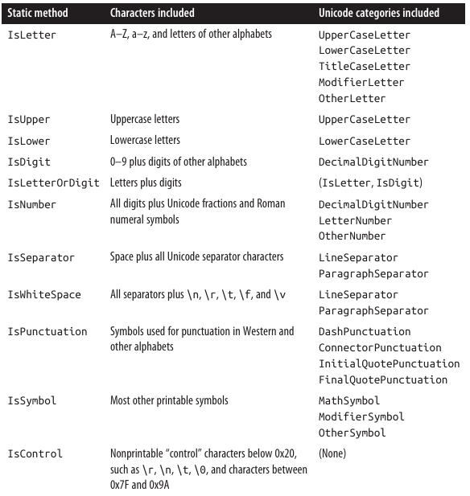
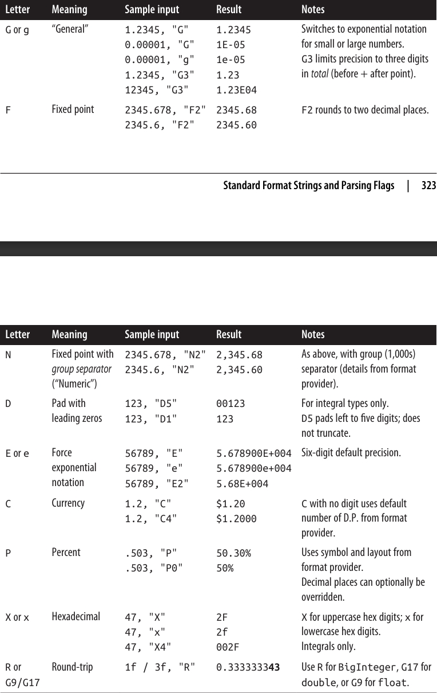
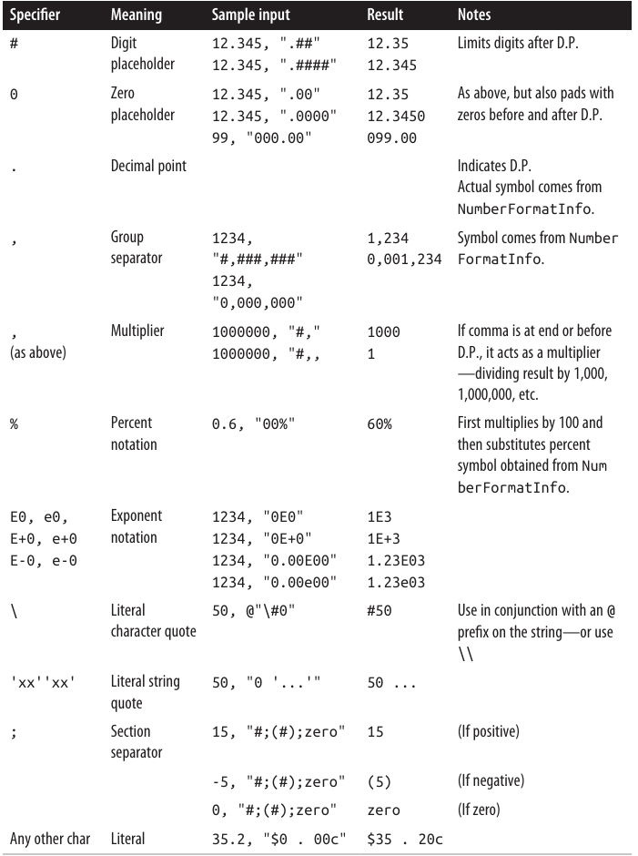
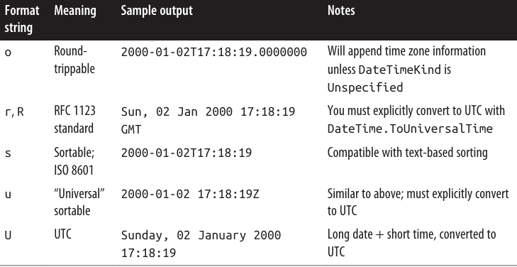

فصل ششم: مبانی .NET
بسیاری از امکانات اصلی که هنگام برنامهنویسی به آنها نیاز دارید، توسط خود زبان C# فراهم نمیشوند، بلکه توسط انواع (Types) موجود در BCL یا همان .NET Base Class Library ارائه میشوند.
در این فصل، با انواعی آشنا میشوید که در انجام کارهای پایهای برنامهنویسی به شما کمک میکنند، مانند:
- مقایسه برابری مجازی (Virtual Equality Comparison)
- مقایسه ترتیب (Order Comparison)
- تبدیل نوع (Type Conversion)
همچنین با انواع پایهای .NET مانند String، DateTime و Enum نیز آشنا خواهید شد.
انواعی که در این بخش پوشش داده میشوند، بیشتر در فضای نام (Namespace) System قرار دارند، به جز موارد زیر:
- StringBuilder و انواع مربوط به کدگذاری متن (Text Encodings) در فضای نام System.Text قرار دارند.
- CultureInfo و انواع مرتبط با آن در System.Globalization قرار دارند.
- XmlConvert در System.Xml تعریف شده است.
مدیریت رشته و متن 📝
Char
یک char در زبان C# نشاندهنده یک کاراکتر یونیکد (Unicode Character) واحد است و در واقع معادل ساختار (struct) System.Char است.
در فصل ۲ توضیح دادیم که چگونه لیترالهای char را بیان کنید:
char c = 'A';
char newLine = '\n';
ساختار System.Char مجموعهای از متدهای static برای کار با کاراکترها ارائه میدهد، مانند ToUpper، ToLower و IsWhiteSpace. شما میتوانید این متدها را هم از طریق System.Char و هم از طریق char فراخوانی کنید:
Console.WriteLine (System.Char.ToUpper ('c')); // C
Console.WriteLine (char.IsWhiteSpace ('\t')); // True
متدهای ToUpper و ToLower به محلیسازی (Locale) کاربر نهایی احترام میگذارند و این میتواند گاهی منجر به بروز خطاهای ظریف شود. به عنوان مثال، عبارت زیر در کشور ترکیه مقدار false را برمیگرداند:
char.ToUpper ('i') == 'I'
دلیل این موضوع این است که در ترکیه، نتیجهی char.ToUpper ('i') برابر با 'İ' است (به نقطه روی حرف توجه کنید!).
برای جلوگیری از این مشکل، System.Char (و همچنین System.String) نسخههای culture-invariant از متدهای ToUpper و ToLower را ارائه میدهند که با پسوند Invariant مشخص میشوند. این متدها همیشه از قوانین فرهنگ انگلیسی استفاده میکنند:
Console.WriteLine (char.ToUpperInvariant ('i')); // I
این در واقع یک میانبر برای کد زیر است:
Console.WriteLine (char.ToUpper ('i', CultureInfo.InvariantCulture))
برای اطلاعات بیشتر درباره localeها و فرهنگها، به بخش Formatting and Parsing در صفحه 317 مراجعه کنید.
بیشتر متدهای static دیگر در char مربوط به دستهبندی کاراکترها هستند. جدول 6-1 این متدها را نشان میدهد.

دستهبندی دقیقتر کاراکترها 🔠
برای دستهبندی دقیقتر، نوع char متدی static به نام GetUnicodeCategory ارائه میدهد؛ این متد یک مقدار از نوع شمارش (Enumeration) UnicodeCategory برمیگرداند که اعضای آن در ستون سمت راست جدول 6-1 نشان داده شدهاند.
با Casting صریح از یک عدد صحیح (int) میتوان یک char تولید کرد که خارج از مجموعه تخصیصدادهشدهی یونیکد باشد. برای آزمایش اعتبار یک کاراکتر، متد char.GetUnicodeCategory را فراخوانی کنید؛ اگر نتیجه برابر با UnicodeCategory.OtherNotAssigned باشد، آن کاراکتر نامعتبر است.
یک char دارای پهنای 16 بیت است—به اندازهای که بتواند هر کاراکتر یونیکد را در Basic Multilingual Plane (BMP) نمایش دهد. برای فراتر رفتن از این محدوده، باید از Surrogate Pairs استفاده کنید؛ روشهای انجام این کار در بخش “Text Encodings and Unicode” در صفحه 301 توضیح داده شدهاند.
String
یک string در زبان C# (یا همان System.String) دنبالهای از کاراکترهاست که تغییرناپذیر (Immutable) است؛ یعنی پس از ایجاد، قابل تغییر نیست. در فصل ۲ نحوهی نوشتن لیترالهای رشتهای (String Literals)، انجام مقایسه برابری (Equality Comparisons) و اتصال دو رشته (Concatenation) را توضیح دادیم.
در این بخش، به سایر قابلیتهای کار با رشتهها میپردازیم که از طریق اعضای static و instance کلاس System.String ارائه شدهاند.
ساخت رشتهها 🏗️
سادهترین روش ساخت یک رشته، انتساب یک لیترال است (همانطور که در فصل ۲ دیدیم):
string s1 = "Hello";
string s2 = "First Line\r\nSecond Line";
string s3 = @"\\server\fileshare\helloworld.cs";
برای ساخت یک توالی تکراری از کاراکترها، میتوانید از سازنده (Constructor) رشته استفاده کنید:
Console.Write (new string ('*', 10)); // **********
همچنین میتوانید یک رشته را از یک آرایهی char بسازید. متد ToCharArray برعکس این کار را انجام میدهد:
char[] ca = "Hello".ToCharArray();
string s = new string (ca); // s = "Hello"
سازندههای رشته همچنین Overload شدهاند تا انواع مختلفی از Pointerهای ناامن (unsafe) مانند char* را نیز بپذیرند و رشتههایی از این انواع بسازند.
رشتههای تهی و خالی ⚠️
یک رشتهی خالی (Empty String) طولی برابر با صفر دارد. برای ساخت رشتهی خالی میتوانید از یک لیترال یا فیلد static به نام string.Empty استفاده کنید. برای بررسی خالی بودن یک رشته میتوانید از مقایسهی برابری یا بررسی ویژگی Length استفاده کنید:
string empty = "";
Console.WriteLine (empty == ""); // True
Console.WriteLine (empty == string.Empty); // True
Console.WriteLine (empty.Length == 0); // True
از آنجایی که رشتهها Reference Type هستند، میتوانند مقدار null نیز داشته باشند:
string nullString = null;
Console.WriteLine (nullString == null); // True
Console.WriteLine (nullString == ""); // False
Console.WriteLine (nullString.Length == 0); // NullReferenceException
متد static string.IsNullOrEmpty میانبری مفید برای بررسی این است که آیا یک رشته null یا خالی است یا خیر.
دسترسی به کاراکترهای داخل یک رشته 🔍
Indexer رشته یک کاراکتر را در شاخص مشخصشده برمیگرداند. همانند سایر عملیات روی رشتهها، شاخصگذاری از صفر شروع میشود:
string str = "abcde";
char letter = str[1]; // letter == 'b'
نوع string رابط IEnumerable
foreach (char c in "123") Console.Write (c + ","); // 1,2,3,
جستجو در رشتهها 🔎
سادهترین متدهای جستجو در رشتهها عبارتند از StartsWith، EndsWith و Contains. هر سه مقدار true یا false برمیگردانند:
Console.WriteLine ("quick brown fox".EndsWith ("fox")); // True
Console.WriteLine ("quick brown fox".Contains ("brown")); // True
این متدها Overload شدهاند تا بتوانید یک StringComparison enum مشخص کنید و حساسیت نسبت به حروف کوچک و بزرگ و فرهنگ (Culture) را کنترل کنید (به بخش “Ordinal versus culture comparison” در صفحه 297 مراجعه کنید). حالت پیشفرض، یک مقایسهی حساس به حروف بزرگ و کوچک با استفاده از قوانین فرهنگ جاری (محلیسازی شده) است. کد زیر یک جستجوی غیرحساس به حروف بزرگ و کوچک را با استفاده از قوانین فرهنگ Invariant انجام میدهد:
"abcdef".StartsWith ("aBc", StringComparison.InvariantCultureIgnoreCase)
متد IndexOf موقعیت اولین وقوع یک کاراکتر یا زیررشته را برمیگرداند (یا −1 اگر زیررشته یافت نشود):
Console.WriteLine ("abcde".IndexOf ("cd")); // 2
IndexOf همچنین Overload شده تا یک startPosition (شاخص شروع جستجو) و همچنین یک StringComparison enum را بپذیرد:
Console.WriteLine ("abcde abcde".IndexOf ("CD", 6,
StringComparison.CurrentCultureIgnoreCase)); // 8
متد LastIndexOf مشابه IndexOf است، با این تفاوت که از انتهای رشته به ابتدا جستجو میکند.
متد IndexOfAny اولین موقعیت یک یا چند کاراکتر مشخص را برمیگرداند:
Console.Write ("ab,cd ef".IndexOfAny (new char[] {' ', ','} )); // 2
Console.Write ("pas5w0rd".IndexOfAny ("0123456789".ToCharArray() )); // 3
LastIndexOfAny نیز همین کار را انجام میدهد اما در جهت معکوس.
دستکاری رشتهها ✂️
از آنجا که String تغییرناپذیر (Immutable) است، تمام متدهایی که رشته را «دستکاری» میکنند، در واقع یک رشتهی جدید برمیگردانند و رشتهی اصلی را بدون تغییر باقی میگذارند (این موضوع زمانی هم که یک متغیر رشته را دوباره مقداردهی میکنید صادق است).
متد Substring – جدا کردن بخشی از رشته
string left3 = "12345".Substring (0, 3); // left3 = "123";
string mid3 = "12345".Substring (1, 3); // mid3 = "234";
اگر طول (length) را مشخص نکنید، باقیماندهی رشته بازگردانده میشود:
string end3 = "12345".Substring (2); // end3 = "345";
متدهای Insert و Remove – درج یا حذف کاراکتر
string s1 = "helloworld".Insert (5, ", "); // s1 = "hello, world"
string s2 = s1.Remove (5, 2); // s2 = "helloworld";
PadLeft و PadRight – پر کردن رشته
این متدها رشته را تا طول مشخصی با کاراکتر دلخواه (یا اگر مشخص نشود، با فاصله) پر میکنند:
Console.WriteLine ("12345".PadLeft (9, '*')); // ****12345
Console.WriteLine ("12345".PadLeft (9)); // 12345
اگر طول مشخصشده کوتاهتر از طول رشته باشد، رشتهی اصلی بدون تغییر برگردانده میشود.
TrimStart، TrimEnd و Trim – حذف کاراکترهای اضافی
این متدها کاراکترهای مشخصشده را از ابتدای رشته (TrimStart) یا انتهای رشته (TrimEnd) حذف میکنند؛ Trim هر دو را انجام میدهد. بهطور پیشفرض، این متدها فاصلهها و کاراکترهای خالی (Whitespace) مانند فاصله، تب، خطوط جدید و نسخههای یونیکد اینها را حذف میکنند:
Console.WriteLine (" abc \t\r\n ".Trim().Length); // 3
Replace – جایگزینی کاراکتر یا زیررشته
این متد تمام (غیرهمپوشان) رخدادهای یک کاراکتر یا زیررشته را جایگزین میکند:
Console.WriteLine ("to be done".Replace (" ", " | ") ); // to | be | done
Console.WriteLine ("to be done".Replace (" ", "") ); // tobedone
ToUpper و ToLower – تبدیل به حروف بزرگ یا کوچک
این متدها نسخهی حروف بزرگ و کوچک رشته را برمیگردانند. بهطور پیشفرض، به تنظیمات زبان جاری کاربر احترام میگذارند؛ در حالی که ToUpperInvariant و ToLowerInvariant همیشه از قوانین حروف الفبای انگلیسی استفاده میکنند.
تقسیم و اتصال رشتهها 🔗
Split – تقسیم رشته
متد Split یک رشته را به بخشهایی تقسیم میکند:
string[] words = "The quick brown fox".Split();
foreach (string word in words)
Console.Write (word + "|"); // The|quick|brown|fox|
بهطور پیشفرض، Split از کاراکترهای فاصله بهعنوان جداکننده استفاده میکند. این متد همچنین Overload شده تا یک آرایهی params از char یا stringهای جداکننده بپذیرد. همچنین میتواند یک StringSplitOptions enum دریافت کند که گزینهای برای حذف ورودیهای خالی دارد؛ این قابلیت زمانی مفید است که کلمات با چندین جداکنندهی پشتسرهم از هم جدا شده باشند.
Join و Concat – اتصال رشتهها
متد Join عکس Split عمل میکند. این متد به یک جداکننده و یک آرایهی رشته نیاز دارد:
string[] words = "The quick brown fox".Split();
string together = string.Join (" ", words); // The quick brown fox
متد Concat مشابه Join است اما تنها یک آرایهی رشته بهصورت params میپذیرد و جداکنندهای اعمال نمیکند. Concat دقیقاً معادل عملگر + است (در واقع کامپایلر + را به Concat تبدیل میکند):
string sentence = string.Concat ("The", " quick", " brown", " fox");
string sameSentence = "The" + " quick" + " brown" + " fox";
String.Format و رشتههای ترکیبی
متد static Format راهی راحت برای ساخت رشتههایی است که در آنها مقادیر متغیرها گنجانده میشوند. این مقادیر میتوانند از هر نوعی باشند؛ Format تنها متد ToString را روی آنها صدا میزند.
رشتهای که شامل متغیرهای جاسازیشده است، رشتهی قالب ترکیبی (Composite Format String) نام دارد. هنگام فراخوانی String.Format، شما رشتهی قالب ترکیبی را به همراه هر یک از متغیرها ارسال میکنید:
string composite = "It's {0} degrees in {1} on this {2} morning";
string s = string.Format (composite, 35, "Perth", DateTime.Now.DayOfWeek);
// s == "It's 35 degrees in Perth on this Friday morning"
(و این دما سلسیوس است!)
ما میتوانیم از رشتههای درونیابیشده (Interpolated String Literals) هم برای همین کار استفاده کنیم (به بخش “String Type” در صفحه 58 مراجعه کنید). کافی است رشته را با علامت $ شروع کرده و عبارات را داخل آکولاد قرار دهید:
string s = $"It's hot this {DateTime.Now.DayOfWeek} morning";
هر عدد داخل آکولاد آیتم قالب (Format Item) نامیده میشود. این عدد به موقعیت آرگومان مربوط است و میتواند بهصورت اختیاری موارد زیر را دنبال کند:
- ویرگول و حداقل عرض (Minimum Width)
- دونقطه و یک رشتهی قالب (Format String)
حداقل عرض برای تراز کردن ستونها مفید است. اگر مقدار منفی باشد، داده بهصورت چپچین قرار میگیرد؛ در غیر این صورت راستچین خواهد شد:
string composite = "Name={0,-20} Credit Limit={1,15:C}";
Console.WriteLine (string.Format (composite, "Mary", 500));
Console.WriteLine (string.Format (composite, "Elizabeth", 20000));
نتیجه:
Name=Mary Credit Limit= $500.00
Name=Elizabeth Credit Limit= $20,000.00
معادل همین بدون استفاده از string.Format:
string s = "Name=" + "Mary".PadRight (20) +
" Credit Limit=" + 500.ToString ("C").PadLeft (15);
محدودیت اعتبار (Credit Limit) بهواسطهی رشتهی قالب "C" بهصورت واحد پولی فرمت شده است. جزئیات رشتههای قالب را در بخش “Formatting and Parsing” در صفحه 317 شرح دادهایم.
مقایسهی رشتهها 🔠
هنگام مقایسهی دو مقدار، .NET بین دو مفهوم مقایسهی برابری (Equality Comparison) و مقایسهی ترتیب (Order Comparison) تفاوت قائل میشود.
- مقایسهی برابری بررسی میکند که آیا دو نمونه از نظر معنایی یکسان هستند یا نه.
- مقایسهی ترتیب مشخص میکند کدامیک از دو نمونه (در صورت وجود تفاوت) در هنگام مرتبسازی به ترتیب صعودی یا نزولی، زودتر یا دیرتر قرار میگیرد.
نکتهی مهم این است که مقایسهی برابری زیرمجموعهای از مقایسهی ترتیب نیست؛ هر کدام هدف متفاوتی دارند. برای مثال، امکان دارد دو مقدار نابرابر در یک موقعیت ترتیبدهی مشابه قرار بگیرند. در بخش “Equality Comparison” در صفحهی 226 دوباره به این موضوع بازمیگردیم.
برای مقایسهی برابری رشتهها میتوانید از عملگر == یا یکی از متدهای Equals در نوع رشته استفاده کنید. متدهای Equals انعطافپذیرتر هستند زیرا اجازه میدهند گزینههایی مانند بیتفاوتی به حروف کوچک و بزرگ (Case Insensitivity) را مشخص کنید.
یک تفاوت دیگر این است که عملگر == روی رشتهها زمانی که متغیرها به نوع object تبدیل (Cast) شوند بهطور قابلاعتماد عمل نمیکند. دلیل این موضوع را در “Equality Comparison” صفحهی 226 توضیح خواهیم داد.
برای مقایسهی ترتیب رشتهها میتوانید از متد CompareTo (نمونهای یا Instance) یا متدهای استاتیک Compare و CompareOrdinal استفاده کنید. این متدها یک عدد مثبت، منفی یا صفر برمیگردانند که نشان میدهد مقدار اول بعد از، قبل از یا همتراز مقدار دوم قرار میگیرد.
قبل از بررسی جزئیات هرکدام، لازم است با الگوریتمهای مقایسهی رشتهای .NET آشنا شویم.
مقایسهی ترتیبی (Ordinal) در برابر مقایسهی مبتنی بر فرهنگ (Culture) 🌍
دو الگوریتم اصلی برای مقایسهی رشتهها وجود دارد:
- Ordinal (ترتیبی): کاراکترها را صرفاً بهعنوان عدد (بر اساس مقدار عددی یونیکد آنها) تفسیر میکند.
- Culture-Sensitive (حساس به فرهنگ): کاراکترها را با توجه به الفبای یک فرهنگ خاص تفسیر میکند.
دو فرهنگ خاص در .NET وجود دارد:
- Current Culture (فرهنگ فعلی): براساس تنظیمات زبان و منطقهای که از Control Panel رایانه گرفته شده است.
- Invariant Culture (فرهنگ ثابت): در همهی رایانهها یکسان است (و تقریباً معادل فرهنگ انگلیسی آمریکایی است).
برای مقایسهی برابری، هر دو الگوریتم ترتیبی و حساس به فرهنگ کاربرد دارند.
اما برای مرتبسازی تقریباً همیشه مقایسهی حساس به فرهنگ ترجیح داده میشود، چون برای مرتبسازی الفبایی به یک الفبا نیاز است. الگوریتم ترتیبی صرفاً به مقادیر یونیکد تکیه دارد، که حروف انگلیسی را به ترتیب الفبایی قرار میدهد، ولی دقیقاً همانطور که انتظار دارید نیست.
برای مثال، فرض کنید حساسیت به بزرگی و کوچکی حروف فعال است و رشتههای زیر را داریم:
"Atom""atom""Zamia"
فرهنگ ثابت (Invariant) آنها را به این ترتیب مرتب میکند:
"atom", "Atom", "Zamia"
اما الگوریتم ترتیبی (Ordinal) نتیجهی زیر را تولید میکند:
"Atom", "Zamia", "atom"
دلیل این تفاوت این است که فرهنگ ثابت حروف کوچک و بزرگ را در کنار هم قرار میدهد (aA bB cC ...)، ولی الگوریتم ترتیبی همهی حروف بزرگ را ابتدا و سپس همهی حروف کوچک را قرار میدهد (A...Z, a...z). این رفتار در واقع برگرفته از مجموعهکاراکتر ASCII است که در دههی 1960 ساخته شده بود.
مقایسهی برابری رشتهها ✍️
با وجود محدودیتهای الگوریتم ترتیبی، عملگر == در رشتهها همیشه از مقایسهی ترتیبی حساس به بزرگی حروف استفاده میکند. همینطور، متد نمونهای string.Equals وقتی بدون آرگومان فراخوانی شود نیز همین رفتار پیشفرض را دارد.
این الگوریتم برای == و Equals انتخاب شده زیرا:
- بسیار سریع و کارآمد است.
- نتیجهی قطعی و قابل پیشبینی دارد.
- مقایسهی برابری یک عملیات بنیادی است و بسیار بیشتر از مقایسهی ترتیب استفاده میشود.
- استفاده از == بهطور کلی با مفهوم برابری دقیق همخوانی دارد.
برای مقایسههای آگاه به فرهنگ یا بیتفاوت به بزرگی حروف، متدهای زیر وجود دارند:
public bool Equals (string value, StringComparison comparisonType);
public static bool Equals (string a, string b, StringComparison comparisonType);
نسخهی استاتیک حتی زمانی که یکی یا هر دو رشته null باشند نیز به درستی کار میکند.
StringComparison یک Enum است که بهصورت زیر تعریف شده است:
public enum StringComparison
{
CurrentCulture, // حساس به بزرگی حروف
CurrentCultureIgnoreCase,
InvariantCulture, // حساس به بزرگی حروف
InvariantCultureIgnoreCase,
Ordinal, // حساس به بزرگی حروف
OrdinalIgnoreCase
}
مثالها:
Console.WriteLine (string.Equals ("foo", "FOO",
StringComparison.OrdinalIgnoreCase)); // True
Console.WriteLine ("ṻ" == "ǖ"); // False
Console.WriteLine (string.Equals ("ṻ", "ǖ",
StringComparison.CurrentCulture)); // ?
(نتیجهی مثال سوم بستگی به تنظیمات زبان فعلی رایانه دارد.)
مقایسهی ترتیب رشتهها 📊
متد CompareTo (نمونهای) روی رشتهها یک مقایسهی حساس به فرهنگ و حساس به بزرگی حروف انجام میدهد. برخلاف عملگر ==، این متد از مقایسهی ترتیبی استفاده نمیکند، چون برای مرتبسازی، مقایسهی حساس به فرهنگ مفیدتر است.
تعریف متد:
public int CompareTo (string strB);
این متد رابط IComparable را پیادهسازی میکند که یک پروتکل استاندارد مقایسه در کتابخانههای .NET است. بنابراین متد CompareTo رفتار پیشفرض مرتبسازی رشتهها را در کاربردهایی مثل مجموعههای مرتبشده تعریف میکند.
برای اطلاعات بیشتر دربارهی IComparable به بخش “Order Comparison” در صفحهی 355 مراجعه کنید.
برای سایر انواع مقایسه، متدهای استاتیک زیر نیز وجود دارند:
public static int Compare (string strA, string strB,
StringComparison comparisonType);
public static int Compare (string strA, string strB, bool ignoreCase,
CultureInfo culture);
public static int Compare (string strA, string strB, bool ignoreCase);
public static int CompareOrdinal (string strA, string strB);
دو متد آخر در واقع میانبری برای فراخوانی دو متد اول هستند.
تمام متدهای مقایسهی ترتیب، عددی مثبت، منفی یا صفر برمیگردانند که نشاندهندهی ترتیب دو مقدار است:
Console.WriteLine ("Boston".CompareTo ("Austin")); // 1
Console.WriteLine ("Boston".CompareTo ("Boston")); // 0
Console.WriteLine ("Boston".CompareTo ("Chicago")); // -1
Console.WriteLine ("ṻ".CompareTo ("ǖ")); // 1
Console.WriteLine ("foo".CompareTo ("FOO")); // -1
برای انجام یک مقایسهی بیتفاوت به بزرگی حروف با فرهنگ فعلی:
Console.WriteLine (string.Compare ("foo", "FOO", true)); // 0
با ارائهی یک شیء CultureInfo، میتوانید هر الفبای دلخواهی را وارد کنید:
// CultureInfo در فضای نام System.Globalization تعریف شده است
CultureInfo german = CultureInfo.GetCultureInfo ("de-DE");
int i = string.Compare ("Müller", "Muller", false, german);
🔠 StringBuilder (رشتهساز)
کلاس StringBuilder در فضای نام System.Text نشاندهندهی یک رشتهی قابلتغییر (Mutable) است. یعنی میتوان آن را ویرایش کرد. با استفاده از StringBuilder میتوانید بخشهایی از متن را اضافه (Append)، درج (Insert)، حذف (Remove) یا جایگزین (Replace) کنید، بدون اینکه نیاز باشد کل رشته را دوباره بسازید.
سازندهی StringBuilder (Constructor) میتواند بهصورت اختیاری یک مقدار اولیهی رشته و همچنین اندازهی شروع ظرفیت داخلی را دریافت کند (ظرفیت پیشفرض برابر با ۱۶ کاراکتر است). اگر اندازهی رشته از این ظرفیت فراتر رود، StringBuilder بهصورت خودکار ساختار داخلی خود را برای جا دادن دادههای جدید تغییر اندازه میدهد (با اندکی کاهش کارایی) تا زمانی که به حداکثر ظرفیت خود برسد (پیشفرض برابر با int.MaxValue است).
یکی از استفادههای رایج StringBuilder، ساخت یک رشتهی طولانی با اضافهکردن مداوم بخشهای جدید است. این روش بسیار سریعتر و بهینهتر از چسباندن (Concatenate) رشتههای معمولی است:
StringBuilder sb = new StringBuilder();
for (int i = 0; i < 50; i++) sb.Append(i).Append(",");
Console.WriteLine(sb.ToString());
خروجی:
0,1,2,3,4,5,6,7,8,9,10,11,12,13,14,15,16,17,18,19,20,21,22,23,24,25,26,
27,28,29,30,31,32,33,34,35,36,37,38,39,40,41,42,43,44,45,46,47,48,49,
برای گرفتن نتیجهی نهایی، از متد ToString() استفاده میکنیم.
- AppendLine همانند Append عمل میکند، با این تفاوت که در انتها یک خط جدید (
"\r\n"در ویندوز) اضافه میکند. - AppendFormat یک رشتهی قالببندی شده را مشابه String.Format اضافه میکند.
علاوه بر متدهای Insert، Remove و Replace (که Replace مشابه Replace در کلاس string عمل میکند)، کلاس StringBuilder ویژگیهای زیر را دارد:
- ویژگی Length برای گرفتن یا تنظیم طول رشته.
- یک ایندکسر قابلنوشتن برای گرفتن یا تغییر کاراکترهای جداگانه.
برای پاککردن محتوای یک StringBuilder، میتوانید یکی از دو روش زیر را استفاده کنید:
- ایجاد یک نمونهی جدید.
- قرار دادن مقدار Length برابر با صفر.
⚠️ توجه: تنظیم Length = 0 ظرفیت داخلی را کاهش نمیدهد. یعنی اگر رشتهی شما قبلاً یک میلیون کاراکتر داشته باشد، پس از صفر کردن طول، همچنان حدود ۲ مگابایت حافظه اشغال خواهد کرد. برای آزادسازی حافظه باید یک StringBuilder جدید ایجاد کنید و نمونهی قبلی را از محدودهی استفاده خارج کنید (تا توسط Garbage Collector حذف شود).
🌐 کدگذاری متن و یونیکد (Text Encodings and Unicode)
مجموعهکاراکتر (Character Set) مجموعهای از کاراکترهاست که هر کدام یک کد عددی (Code Point) دارند. دو مجموعهکاراکتر رایج عبارتاند از:
- Unicode (یونیکد): دارای فضای آدرسدهی حدود ۱ میلیون کاراکتر است که تقریباً ۱۰۰٬۰۰۰ کاراکتر تاکنون تخصیص یافتهاند. این مجموعه شامل اکثر زبانهای گفتاری دنیا، برخی زبانهای تاریخی و نمادهای خاص است.
- ASCII (اَسکی): شامل ۱۲۸ کاراکتر اول مجموعهی یونیکد است که عمدتاً کاراکترهای موجود روی صفحهکلیدهای آمریکایی را پوشش میدهد. ASCII حدود ۳۰ سال قبل از یونیکد معرفی شده و هنوز هم بهدلیل سادگی و کارایی استفاده میشود (هر کاراکتر یک بایت است).
سیستم تایپ در .NET برای کار با یونیکد طراحی شده است. با این حال، چون ASCII زیرمجموعهای از یونیکد است، بهصورت ضمنی پشتیبانی میشود.
کدگذاری متن (Text Encoding) وظیفه دارد کاراکترها را از کد عددی (Code Point) به نمایش دودویی (Binary) و بالعکس تبدیل کند. در .NET، کدگذاریها بیشتر هنگام کار با فایلهای متنی یا جریانهای داده (Streams) استفاده میشوند. برای مثال، وقتی یک فایل متنی را به رشته تبدیل میکنید، Encoder دادههای باینری را به نمایش داخلی یونیکد که انواع char و string نیاز دارند، تبدیل میکند.
کدگذاریها میتوانند تعیین کنند:
- چه کاراکترهایی قابل نمایش هستند.
- چقدر فضا برای ذخیرهسازی نیاز است.
در .NET دو دسته اصلی از کدگذاریها وجود دارد:
-
کدگذاریهایی که کاراکترهای یونیکد را به یک مجموعهکاراکتر دیگر نگاشت میکنند
- شامل کدگذاریهای قدیمی مثل EBCDIC شرکت IBM و مجموعههای ۸ بیتی که قبل از یونیکد رایج بودند (شناختهشده بهوسیلهی Code Page).
- ASCII نیز در این دسته قرار میگیرد: تنها ۱۲۸ کاراکتر اول را پشتیبانی میکند و باقی را حذف میکند.
- GB18030 نیز در این دسته است و از سال ۲۰۰۰ بهعنوان استاندارد اجباری برای نرمافزارهای مورد استفاده یا فروختهشده در چین معرفی شد.
-
کدگذاریهایی که از طرحهای استاندارد یونیکد استفاده میکنند
-
شامل UTF-8، UTF-16 و UTF-32 (و UTF-7 قدیمی).
-
هر کدام از نظر فضای ذخیرهسازی متفاوتاند:
- UTF-8: بین ۱ تا ۴ بایت برای هر کاراکتر. ۱۲۸ کاراکتر اول فقط ۱ بایت میگیرند (سازگار با ASCII). پرکاربردترین کدگذاری، مخصوصاً در اینترنت، و پیشفرض بسیاری از عملیات I/O در .NET است.
- UTF-16: از یک یا دو واژهی ۱۶ بیتی برای هر کاراکتر استفاده میکند. این همان قالب داخلی .NET برای نمایش رشتهها و کاراکترهاست.
- UTF-32: ناکارآمدترین از نظر فضا؛ هر کاراکتر دقیقاً ۴ بایت میگیرد. بهندرت استفاده میشود اما برای دسترسی تصادفی به کاراکترها بسیار ساده است.
-
🔑 دریافت یک شیء Encoding
کلاس Encoding در فضای نام System.Text، پایهی مشترک تمام کلاسهای مرتبط با کدگذاری است. این کلاس چند زیرکلاس دارد که خانوادههای مختلف کدگذاری را پیادهسازی میکنند. رایجترین کدگذاریها از طریق ویژگیهای استاتیک (Static Properties) کلاس Encoding در دسترس هستند.

بهدست آوردن سایر Encodingها 🎛️
میتوانید با استفاده از متد Encoding.GetEncoding و وارد کردن یک نام استاندارد کاراکترست از Internet Assigned Numbers Authority (IANA) سایر Encodingها را بهدست آورید:
// در .NET 5+ و .NET Core، ابتدا باید RegisterProvider را فراخوانی کنید:
Encoding.RegisterProvider(CodePagesEncodingProvider.Instance);
Encoding chinese = Encoding.GetEncoding("GB18030");
متد ایستای GetEncodings فهرستی از تمام Encodingهای پشتیبانیشده را همراه با نامهای استاندارد IANA برمیگرداند:
foreach (EncodingInfo info in Encoding.GetEncodings())
Console.WriteLine(info.Name);
روش دیگر برای بهدست آوردن یک Encoding این است که مستقیماً یک کلاس Encoding را نمونهسازی کنید. این کار به شما اجازه میدهد گزینههای مختلفی را از طریق آرگومانهای سازنده مشخص کنید، از جمله:
- آیا در صورت مواجهه با دنباله بایت نامعتبر در هنگام Decode کردن، استثنا (Exception) پرتاب شود یا خیر. مقدار پیشفرض false است.
- آیا UTF-16/UTF-32 با بایتهای پرارزشتر در ابتدا (big endian) یا بایتهای کمارزشتر در ابتدا (little endian) رمزگذاری/رمزگشایی شوند. مقدار پیشفرض little endian است که استاندارد سیستمعامل ویندوز محسوب میشود.
- آیا یک Byte-Order Mark (BOM) یا همان پیشوند نشاندهنده نوع Endianness صادر شود یا خیر.
Encoding برای فایلها و جریانها (File و Stream I/O) 📂
رایجترین کاربرد یک شیء Encoding کنترل نحوه خواندن و نوشتن متن در فایل یا جریان است. برای مثال، کد زیر رشته "Testing..." را در فایلی به نام data.txt با Encoding UTF-16 مینویسد:
System.IO.File.WriteAllText("data.txt", "Testing...", Encoding.Unicode);
اگر آرگومان نهایی را حذف کنید، WriteAllText از UTF-8 استفاده میکند که رایجترین و پیشفرض Encoding برای تمام عملیات فایل و جریان است.
ما در فصل ۱۵، در بخش “Stream Adapters” در صفحه 709 دوباره به این موضوع بازخواهیم گشت.
Encoding برای آرایههای بایتی 💾
میتوانید از یک شیء Encoding برای تبدیل بین string و byte[] استفاده کنید.
- متد GetBytes از string به byte[] تبدیل میکند.
- متد GetString برعکس عمل میکند:
byte[] utf8Bytes = System.Text.Encoding.UTF8.GetBytes("0123456789");
byte[] utf16Bytes = System.Text.Encoding.Unicode.GetBytes("0123456789");
byte[] utf32Bytes = System.Text.Encoding.UTF32.GetBytes("0123456789");
Console.WriteLine(utf8Bytes.Length); // 10
Console.WriteLine(utf16Bytes.Length); // 20
Console.WriteLine(utf32Bytes.Length); // 40
string original1 = System.Text.Encoding.UTF8.GetString(utf8Bytes);
string original2 = System.Text.Encoding.Unicode.GetString(utf16Bytes);
string original3 = System.Text.Encoding.UTF32.GetString(utf32Bytes);
Console.WriteLine(original1); // 0123456789
Console.WriteLine(original2); // 0123456789
Console.WriteLine(original3); // 0123456789
UTF-16 و جفتهای جایگزین (Surrogate Pairs) 🧩
یادتان باشد که .NET کاراکترها و رشتهها را در UTF-16 ذخیره میکند. چون UTF-16 برای هر کاراکتر به یک یا دو کلمه ۱۶ بیتی نیاز دارد و نوع char فقط ۱۶ بیت طول دارد، برخی از کاراکترهای Unicode نیاز به دو char دارند. پیامدهای این موضوع:
- ویژگی Length یک رشته ممکن است بزرگتر از تعداد واقعی کاراکترها باشد.
- یک char همیشه بهتنهایی نمیتواند یک کاراکتر Unicode را بهطور کامل نشان دهد.
اکثر برنامهها این موضوع را نادیده میگیرند زیرا تقریباً همه کاراکترهای رایج در Basic Multilingual Plane (BMP) جا میگیرند که تنها به یک کلمه ۱۶ بیتی نیاز دارد. BMP شامل چندین زبان جهانی و بیش از ۳۰,۰۰۰ کاراکتر چینی است.
اما کاراکترهای خارج از BMP شامل زبانهای باستانی، نمادهای نتنویسی موسیقی، برخی کاراکترهای نادر چینی و بیشتر ایموجیها هستند.
برای پشتیبانی از کاراکترهای دوکلمهای میتوانید از متدهای ایستای char استفاده کنید:
string ConvertFromUtf32(int utf32)
int ConvertToUtf32(char highSurrogate, char lowSurrogate)
کاراکترهای دوکلمهای Surrogate نامیده میشوند و بهراحتی قابل تشخیصاند چون هر کلمه در بازه 0xD800 تا 0xDFFF قرار دارد. متدهای مفید:
bool IsSurrogate(char c)
bool IsHighSurrogate(char c)
bool IsLowSurrogate(char c)
bool IsSurrogatePair(char highSurrogate, char lowSurrogate)
کلاس StringInfo در فضای نام System.Globalization نیز متدها و ویژگیهایی برای کار با کاراکترهای دوکلمهای فراهم میکند.
کاراکترهای خارج از BMP معمولاً به فونتهای خاص نیاز دارند و پشتیبانی محدودی در سیستمعامل دارند.
تاریخها و زمانها ⏰
ساختارهای (Struct) تغییرناپذیر (Immutable) زیر در فضای نام System برای نمایش تاریخ و زمان به کار میروند:
DateTime, DateTimeOffset, TimeSpan, DateOnly, TimeOnly
زبان C# هیچ کلیدواژه خاصی برای این انواع تعریف نکرده است.
TimeSpan
TimeSpan یک بازه زمانی یا زمان روز را نمایش میدهد. در نقش دوم، این زمان همان زمان ساعت (بدون تاریخ) است که معادل مدتزمان سپریشده از نیمهشب است، فرض بر اینکه تغییر ساعت تابستانی وجود ندارد.
- دقت: 100 نانوثانیه
- بیشترین مقدار: حدود ۱۰ میلیون روز
- میتواند مثبت یا منفی باشد
سه روش برای ساخت یک TimeSpan وجود دارد:
- استفاده از یکی از سازندهها (Constructors)
- فراخوانی یکی از متدهای ایستای From…
- کم کردن یک DateTime از دیگری
نمونه سازندهها:
public TimeSpan(int hours, int minutes, int seconds);
public TimeSpan(int days, int hours, int minutes, int seconds);
public TimeSpan(int days, int hours, int minutes, int seconds, int milliseconds);
public TimeSpan(int days, int hours, int minutes, int seconds, int milliseconds, int microseconds);
public TimeSpan(long ticks); // هر tick = 100ns
نمونه متدهای From…:
public static TimeSpan FromDays(double value);
public static TimeSpan FromHours(double value);
public static TimeSpan FromMinutes(double value);
public static TimeSpan FromSeconds(double value);
public static TimeSpan FromMilliseconds(double value);
public static TimeSpan FromMicroseconds(double value);
نمونه استفاده:
Console.WriteLine(new TimeSpan(2, 30, 0)); // 02:30:00
Console.WriteLine(TimeSpan.FromHours(2.5)); // 02:30:00
Console.WriteLine(TimeSpan.FromHours(-2.5)); // -02:30:00
عملگرهای < و > و همچنین + و - برای TimeSpan سربارگذاری شدهاند:
TimeSpan.FromHours(2) + TimeSpan.FromMinutes(30); // 2.5 ساعت
TimeSpan.FromDays(10) - TimeSpan.FromSeconds(1); // 9.23:59:59
ویژگیهای عددی:
TimeSpan nearlyTenDays = TimeSpan.FromDays(10) - TimeSpan.FromSeconds(1);
Console.WriteLine(nearlyTenDays.Days); // 9
Console.WriteLine(nearlyTenDays.Hours); // 23
Console.WriteLine(nearlyTenDays.Minutes); // 59
Console.WriteLine(nearlyTenDays.Seconds); // 59
Console.WriteLine(nearlyTenDays.Milliseconds); // 0
ویژگیهای Total… مقادیر اعشاری (double) را برای کل بازه برمیگردانند:
Console.WriteLine(nearlyTenDays.TotalDays); // 9.99998842592593
Console.WriteLine(nearlyTenDays.TotalHours); // 239.999722222222
Console.WriteLine(nearlyTenDays.TotalMinutes); // 14399.9833333333
Console.WriteLine(nearlyTenDays.TotalSeconds); // 863999
Console.WriteLine(nearlyTenDays.TotalMilliseconds); // 863999000
متد ایستای Parse رشته را به TimeSpan تبدیل میکند (برعکس ToString). متد TryParse مشابه است ولی بهجای پرتاب استثنا در صورت خطا، false برمیگرداند.
کلاس XmlConvert نیز متدهایی برای تبدیل TimeSpan/رشته طبق پروتکلهای استاندارد XML دارد.
مقدار پیشفرض TimeSpan برابر با TimeSpan.Zero است.
برای نمایش زمان روز (مدتزمان سپریشده از نیمهشب)، میتوانید از ویژگی DateTime.Now.TimeOfDay استفاده کنید.
DateTime و DateTimeOffset ⏰
DateTime و DateTimeOffset دو struct تغییرناپذیر (immutable) برای نمایش یک تاریخ و در صورت نیاز، زمان هستند. این دو دارای دقتی معادل 100 نانوثانیه بوده و محدودهای از سال 0001 تا 9999 را پوشش میدهند.
DateTimeOffset از نظر کارکرد شبیه DateTime است. تفاوت اصلی آن در این است که یک اختلاف زمانی (offset) نسبت به زمان هماهنگ جهانی (UTC) را هم ذخیره میکند؛ این موضوع باعث میشود مقایسه مقادیر در مناطق زمانی مختلف دقیقتر انجام شود.
انتخاب بین DateTime و DateTimeOffset 🤔
تفاوت اصلی این دو در نحوه مدیریت مناطق زمانی (Time Zone) است:
-
DateTimeدارای یک پرچم سهحالته است که مشخص میکند تاریخ و زمان نسبت به کدام گزینه است:- زمان محلی روی کامپیوتر فعلی
UTC(معادل مدرن زمان گرینویچ)- نامشخص (Unspecified)
-
اما
DateTimeOffsetدقیقتر است؛ این نوع اختلاف زمانی نسبت به UTC را بهصورت یک شیء از نوع TimeSpan ذخیره میکند:
July 01 2019 03:00:00 -06:00
این موضوع در مقایسهی برابری (Equality) اهمیت دارد و معیار انتخاب یکی از این دو است:
DateTimeپرچم سهحالته را در مقایسهها نادیده میگیرد و دو مقدار را برابر میداند اگر سال، ماه، روز، ساعت، دقیقه و ... آنها یکی باشد.DateTimeOffsetدو مقدار را برابر میداند اگر به یک نقطه زمانی یکسان اشاره کنند.
مثال مهم: ساعت تابستانی (Daylight Saving Time) میتواند این تفاوت را حتی اگر برنامه شما نیازی به پشتیبانی از مناطق زمانی مختلف نداشته باشد، مهم کند.
نمونه:
DateTime مقادیر زیر را متفاوت میداند، در حالی که DateTimeOffset آنها را برابر میداند:
- July 01 2019 09:00:00 +00:00 (GMT)
- July 01 2019 03:00:00 -06:00 (محلی، آمریکای مرکزی)
مزیت DateTimeOffset در بیشتر موارد 🌍
در اکثر سناریوها، منطق برابری DateTimeOffset بهتر است.
مثلاً برای مقایسه زمان دو رویداد بینالمللی، DateTimeOffset بهصورت پیشفرض پاسخ درست را ارائه میدهد.
حتی یک هکر که قصد اجرای یک حملهی Distributed Denial of Service داشته باشد نیز از DateTimeOffset استفاده میکند!
اما در DateTime برای دستیابی به همین دقت باید همهچیز را در یک منطقه زمانی واحد (معمولاً UTC) استاندارد کنید که این دو مشکل دارد:
- برای کاربرپسند بودن، نیاز به تبدیل صریح UTC به زمان محلی قبل از نمایش دارید.
- ممکن است فراموش کنید و زمان محلی را بهصورت تصادفی وارد کنید.
مزیت DateTime در زمانهای محلی 🖥️
با این حال، DateTime در مشخص کردن زمان نسبت به ساعت محلی سیستم اجرا مناسبتر است.
مثلاً اگر بخواهید برای هر دفتر بینالمللی خود یک آرشیو هفتگی در ساعت ۳ صبح به وقت محلی انجام دهید، DateTime بهتر است چون به زمان محلی هر سایت احترام میگذارد.
نکته:
DateTimeOffsetبرای ذخیرهی اختلاف زمانی از یک عدد صحیح کوتاه (short) استفاده میکند و این اختلاف را برحسب دقیقه ذخیره میکند.
اما اطلاعات منطقه زمانی (Region) را ذخیره نمیکند. یعنی نمیدانیم اختلاف +08:00 به زمان سنگاپور اشاره دارد یا پرت.
ما در بخش “Dates and Time Zones” صفحه 312 دوباره به موضوع مناطق زمانی و مقایسهی برابری بازمیگردیم.
همچنین SQL Server 2008 پشتیبانی مستقیم از DateTimeOffset را با معرفی یک نوع دادهی جدید با همین نام اضافه کرده است.
ساخت یک DateTime 🛠️
DateTime چندین سازنده (Constructor) دارد که مقادیر سال، ماه و روز را بهصورت اعداد صحیح دریافت میکنند و در صورت نیاز میتوان ساعت، دقیقه، ثانیه، میلیثانیه (و از .NET 7 میکروثانیه) را هم مشخص کرد:
public DateTime (int year, int month, int day);
public DateTime (int year, int month, int day,
int hour, int minute, int second, int millisecond);
- اگر فقط تاریخ مشخص شود، زمان بهصورت پیشفرض نیمهشب (0:00) تنظیم میشود.
مشخص کردن DateTimeKind 🧭
سازندههای DateTime به شما اجازه میدهند یک مقدار از نوع enum به نام DateTimeKind هم مشخص کنید که شامل این مقادیر است:
UnspecifiedLocalUtc
این مقدار همان پرچم سهحالتهای است که در بخش قبلی توضیح داده شد.
Unspecifiedپیشفرض است و به این معنی است که زمان به منطقه زمانی خاصی وابسته نیست.Localیعنی زمان نسبت به منطقه زمانی سیستم فعلی است.
توجه: DateTime برخلاف DateTimeOffset اطلاعات دقیق منطقه زمانی یا اختلاف عددی از UTC را ذخیره نمیکند.
مقدار Kind در یک شیء DateTime نشاندهندهی همین حالت است.
استفاده از تقویمهای مختلف 📅
سازندههای DateTime قابلیت دریافت یک شیء Calendar را هم دارند.
این امکان به شما اجازه میدهد از هر زیرکلاسی از Calendar در System.Globalization برای ایجاد تاریخ استفاده کنید:
DateTime d = new DateTime (5767, 1, 1,
new System.Globalization.HebrewCalendar());
Console.WriteLine (d); // 12/12/2006 12:00:00 AM
نمایش تاریخ به تنظیمات کنترل پنل سیستم شما بستگی دارد.
در نهایت،DateTimeهمیشه از تقویم میلادی (Gregorian) برای ذخیره استفاده میکند و این تبدیل فقط در زمان ساخت شیء انجام میشود.
اگر بخواهید محاسباتی با یک تقویم خاص انجام دهید، باید مستقیماً متدهای همان زیرکلاس Calendar را بهکار ببرید.
ساخت DateTime با Ticks یا زمانهای خاص ⏳
- میتوانید یک
DateTimeرا با مقدارticksبسازید که یک عدد از نوع long است. - هر tick برابر است با یک بازهی 100 نانوثانیه از نیمهشب 01/01/0001.
همچنین برای سازگاری با سیستمهای دیگر، متدهای استاتیک زیر وجود دارند:
- FromFileTime و FromFileTimeUtc: تبدیل زمان فایلهای ویندوز (long) به DateTime.
- FromOADate: تبدیل زمان OLE Automation (double) به DateTime.
ساخت DateTime از رشتههای متنی 🔤
برای ساخت یک DateTime از رشتهها، میتوانید از متدهای استاتیک زیر استفاده کنید:
ParseParseExact
هر دو متد پارامترهای اختیاری برای مشخص کردن پرچمها (flags) و فرمتدهندهها (format providers) دارند؛ همچنین ParseExact یک رشتهی فرمت هم دریافت میکند.
توضیحات کاملتر در بخش “Formatting and Parsing” صفحه 317 آمده است.
ساخت DateTimeOffset و کار با آن ⏰
DateTimeOffset مشابه DateTime عمل میکند، اما اضافه بر تاریخ و زمان، یک اختلاف زمانی نسبت به UTC هم دریافت میکند.
سازندهها (Constructors)
public DateTimeOffset (int year, int month, int day,
int hour, int minute, int second,
TimeSpan offset);
public DateTimeOffset (int year, int month, int day,
int hour, int minute, int second, int millisecond,
TimeSpan offset);
- محدودیت: TimeSpan باید به دقیقه کامل باشد، در غیر این صورت Exception رخ میدهد.
- سازندهها همچنین نسخههایی دارند که Calendar، ticks، یا رشته دریافت میکنند (
ParseوParseExact).
ساخت از یک DateTime موجود
میتوانید یک DateTimeOffset را از یک شیء DateTime بسازید:
public DateTimeOffset (DateTime dateTime);
public DateTimeOffset (DateTime dateTime, TimeSpan offset);
همچنین امکان تبدیل ضمنی (implicit cast) از DateTime به DateTimeOffset وجود دارد:
DateTimeOffset dt = new DateTime(2000, 2, 3);
این کار مفید است چون اکثر کتابخانههای BCL .NET هنوز
DateTimeرا پشتیبانی میکنند، نهDateTimeOffset.
قوانین پیشفرض برای offset
- اگر
DateTime.Kind == Utc→ offset = 0 - اگر
DateTime.Kind == LocalیاUnspecified→ offset از منطقه زمانی محلی سیستم گرفته میشود.
تبدیل DateTimeOffset به DateTime
سه ویژگی (property) برای تبدیل وجود دارد:
UtcDateTime→ DateTime به زمان UTCLocalDateTime→ DateTime به زمان محلی سیستمDateTime→ DateTime با همان منطقه زمانی که مقدار original داشت، باKind = Unspecified
زمان فعلی (Now, Today, UtcNow)
| نوع | ویژگی | توضیح |
|---|---|---|
| DateTime | Now |
تاریخ و زمان محلی |
| DateTimeOffset | Now |
تاریخ و زمان محلی + offset |
| DateTime | Today |
فقط تاریخ، زمان صفر (نیمهشب) |
| DateTime/DateTimeOffset | UtcNow |
تاریخ و زمان در UTC |
Console.WriteLine(DateTime.Now); // 11/11/2019 1:23:45 PM
Console.WriteLine(DateTimeOffset.Now); // 11/11/2019 1:23:45 PM -06:00
Console.WriteLine(DateTime.Today); // 11/11/2019 12:00:00 AM
Console.WriteLine(DateTime.UtcNow); // 11/11/2019 7:23:45 AM
Console.WriteLine(DateTimeOffset.UtcNow);// 11/11/2019 7:23:45 AM +00:00
دقت این مقادیر معمولاً بین ۱۰ تا ۲۰ میلیثانیه است و به سیستم عامل بستگی دارد.
دسترسی به اجزای تاریخ و زمان
DateTime dt = new DateTime(2000, 2, 3, 10, 20, 30);
Console.WriteLine(dt.Year); // 2000
Console.WriteLine(dt.Month); // 2
Console.WriteLine(dt.Day); // 3
Console.WriteLine(dt.DayOfWeek); // Thursday
Console.WriteLine(dt.DayOfYear); // 34
Console.WriteLine(dt.Hour); // 10
Console.WriteLine(dt.Minute); // 20
Console.WriteLine(dt.Second); // 30
Console.WriteLine(dt.Millisecond); // 0
Console.WriteLine(dt.Ticks); // 630851700300000000
Console.WriteLine(dt.TimeOfDay); // 10:20:30 (TimeSpan)
DateTimeOffsetعلاوه بر اینها، ویژگی Offset از نوع TimeSpan دارد.
محاسبات روی تاریخ و زمان
متدهای نمونه برای تغییر مقادیر تاریخ/زمان (برمیگردانند یک شیء جدید):
AddYears, AddMonths, AddDays,
AddHours, AddMinutes, AddSeconds,
AddMilliseconds, AddTicks
- ورودی میتواند منفی باشد تا کم کردن زمان را انجام دهد.
Addیک TimeSpan به تاریخ اضافه میکند؛ عملگر+نیز مشابه عمل میکند:
TimeSpan ts = TimeSpan.FromMinutes(90);
Console.WriteLine(dt.Add(ts));
Console.WriteLine(dt + ts); // مشابه بالا
- میتوان TimeSpan را کم کرد یا دو DateTime/DateTimeOffset را از هم کم کرد تا یک TimeSpan حاصل شود:
DateTime thisYear = new DateTime(2015, 1, 1);
DateTime nextYear = thisYear.AddYears(1);
TimeSpan oneYear = nextYear - thisYear;
قالببندی و پارس کردن (Formatting & Parsing)
ToString()در DateTime → تاریخ کوتاه + زمان طولانی (شامل ثانیهها)
مثال:11/11/2019 11:50:30 AMToString()در DateTimeOffset → همان، اما offset نیز نمایش داده میشود:11/11/2019 11:50:30 AM -06:00ToShortDateString,ToLongDateString→ فقط تاریخToShortTimeString,ToLongTimeString→ فقط زمان
این متدها در واقع میانبرهایی برای قالبهای استاندارد هستند.
ToStringمیتواند فرمت سفارشی و provider نیز دریافت کند.
جلوگیری از پارس اشتباه
اگر تنظیمات Culture هنگام parse با زمان فرمت شده متفاوت باشد، ممکن است parse اشتباه شود.
راه حل: از فرمت culture-agnostic استفاده کنید، مثلاً "o":
DateTime dt1 = DateTime.Now;
string cannotBeMisparsed = dt1.ToString("o");
DateTime dt2 = DateTime.Parse(cannotBeMisparsed);
- متدهای استاتیک
Parse,TryParse,ParseExact,TryParseExactرشته را به DateTime یا DateTimeOffset تبدیل میکنند. - نسخههای
Try*به جای پرتاب Exception،falseبرمیگردانند.
TimeZoneInfo ⏰🌍
کلاس TimeZoneInfo اطلاعاتی درباره نام مناطق زمانی، افستهای UTC و قوانین Daylight Saving Time ارائه میدهد.
TimeZone
متد ایستا TimeZone.CurrentTimeZone یک شیء TimeZone برمیگرداند:
TimeZone zone = TimeZone.CurrentTimeZone;
Console.WriteLine (zone.StandardName); // Pacific Standard Time
Console.WriteLine (zone.DaylightName); // Pacific Daylight Time
متد GetDaylightChanges اطلاعات خاص مربوط به Daylight Saving Time برای یک سال مشخص را برمیگرداند:
DaylightTime day = zone.GetDaylightChanges (2019);
Console.WriteLine (day.Start.ToString ("M")); // 10 March
Console.WriteLine (day.End.ToString ("M")); // 03 November
Console.WriteLine (day.Delta); // 01:00:00
TimeZoneInfo
متد ایستا TimeZoneInfo.Local یک شیء TimeZoneInfo بر اساس تنظیمات محلی جاری برمیگرداند. مثال زیر نتیجه اجرای آن در کالیفرنیا را نشان میدهد:
TimeZoneInfo zone = TimeZoneInfo.Local;
Console.WriteLine (zone.StandardName); // Pacific Standard Time
Console.WriteLine (zone.DaylightName); // Pacific Daylight Time
متدهای IsDaylightSavingTime و GetUtcOffset به شکل زیر کار میکنند:
DateTime dt1 = new DateTime (2019, 1, 1); // DateTimeOffset هم کار میکند
DateTime dt2 = new DateTime (2019, 6, 1);
Console.WriteLine (zone.IsDaylightSavingTime (dt1)); // True
Console.WriteLine (zone.IsDaylightSavingTime (dt2)); // False
Console.WriteLine (zone.GetUtcOffset (dt1)); // -08:00:00
Console.WriteLine (zone.GetUtcOffset (dt2)); // -07:00:00
برای دریافت TimeZoneInfo هر منطقه زمانی جهان، از متد FindSystemTimeZoneById استفاده میکنیم. در اینجا به منطقه غرب استرالیا میرویم:
TimeZoneInfo wa = TimeZoneInfo.FindSystemTimeZoneById
("W. Australia Standard Time");
Console.WriteLine (wa.Id); // W. Australia Standard Time
Console.WriteLine (wa.DisplayName); // (GMT+08:00) Perth
Console.WriteLine (wa.BaseUtcOffset); // 08:00:00
Console.WriteLine (wa.SupportsDaylightSavingTime); // True
ویژگی Id همان مقداری است که به FindSystemTimeZoneById پاس داده شده است.
متد ایستا GetSystemTimeZones تمام مناطق زمانی جهان را برمیگرداند و میتوان تمام شناسههای معتبر را لیست کرد:
foreach (TimeZoneInfo z in TimeZoneInfo.GetSystemTimeZones())
Console.WriteLine (z.Id);
میتوان یک منطقه زمانی سفارشی ایجاد کرد با TimeZoneInfo.CreateCustomTimeZone.
چون TimeZoneInfo غیرقابل تغییر است، همه اطلاعات لازم باید هنگام ایجاد به متد داده شوند.
همچنین میتوان یک منطقه زمانی از پیش تعریفشده یا سفارشی را با ToSerializedString به رشتهای نیمهقابلخواندن برای انسان تبدیل کرد و با TimeZoneInfo.FromSerializedString دوباره بازیابی نمود.
متد ایستا ConvertTime یک DateTime یا DateTimeOffset را از یک منطقه زمانی به منطقهای دیگر تبدیل میکند. میتوان تنها منطقه مقصد را مشخص کرد یا هر دو منطقه مبدأ و مقصد را وارد نمود. تبدیل مستقیم از/به UTC نیز با متدهای ConvertTimeFromUtc و ConvertTimeToUtc ممکن است.
برای کار با Daylight Saving Time، TimeZoneInfo متدهای اضافی زیر را فراهم میکند:
- IsInvalidTime: true برمیگرداند اگر یک DateTime در ساعتی باشد که در جلو بردن ساعتها حذف شده است.
- IsAmbiguousTime: true برمیگرداند اگر یک DateTime یا DateTimeOffset در ساعتی باشد که در عقب بردن ساعتها تکرار شده است.
- GetAmbiguousTimeOffsets: آرایهای از TimeSpan برمیگرداند که انتخابهای معتبر افست برای یک زمان مبهم را نشان میدهد.
برای گرفتن تاریخهای شروع و پایان Daylight Saving Time از یک TimeZoneInfo، باید GetAdjustmentRules را صدا زد که خلاصه قوانین DST را برای همه سالها برمیگرداند. هر قانون دارای DateStart و DateEnd است:
foreach (TimeZoneInfo.AdjustmentRule rule in wa.GetAdjustmentRules())
Console.WriteLine ("Rule: applies from " + rule.DateStart +
" to " + rule.DateEnd);
مثال: غرب استرالیا اولین بار Daylight Saving Time را در ۲۰۰۶ معرفی کرد و سپس در ۲۰۰۹ لغو نمود. سال اول نیاز به قانون ویژه داشت، بنابراین دو قانون داریم:
Rule: applies from 1/01/2006 12:00:00 AM to 31/12/2006 12:00:00 AM
Rule: applies from 1/01/2007 12:00:00 AM to 31/12/2009 12:00:00 AM
هر AdjustmentRule دارای DaylightDelta از نوع TimeSpan (معمولاً یک ساعت) و ویژگیهای DaylightTransitionStart و DaylightTransitionEnd است که از نوع TimeZoneInfo.TransitionTime بوده و ویژگیهای زیر را دارند:
public bool IsFixedDateRule { get; }
public DayOfWeek DayOfWeek { get; }
public int Week { get; }
public int Day { get; }
public int Month { get; }
public DateTime TimeOfDay { get; }
زمان انتقال (TransitionTime) میتواند هم تاریخ ثابت و هم شناور را نشان دهد. مثال تاریخ شناور: «آخرین یکشنبه ماه مارس».
قوانین تفسیر TransitionTime:
1️⃣ اگر برای End Transition، IsFixedDateRule=true، Day=1، Month=1 و TimeOfDay=DateTime.MinValue، آن سال پایان DST وجود ندارد (معمولاً در نیمکره جنوبی).
2️⃣ اگر IsFixedDateRule=true، Month، Day و TimeOfDay تعیینکننده شروع یا پایان قانون هستند.
3️⃣ اگر IsFixedDateRule=false، Month، DayOfWeek، Week و TimeOfDay تعیینکننده شروع یا پایان قانون هستند.
در حالت آخر، Week شماره هفته ماه است و «۵» یعنی آخرین هفته.
مثال قوانین انتقال wa:
foreach (TimeZoneInfo.AdjustmentRule rule in wa.GetAdjustmentRules())
{
Console.WriteLine ("Rule: applies from " + rule.DateStart +
" to " + rule.DateEnd);
Console.WriteLine (" Delta: " + rule.DaylightDelta);
Console.WriteLine (" Start: " + FormatTransitionTime
(rule.DaylightTransitionStart, false));
Console.WriteLine (" End: " + FormatTransitionTime
(rule.DaylightTransitionEnd, true));
Console.WriteLine();
}
در FormatTransitionTime قوانین فوق رعایت میشوند:
static string FormatTransitionTime (TimeZoneInfo.TransitionTime tt,
bool endTime)
{
if (endTime && tt.IsFixedDateRule
&& tt.Day == 1 && tt.Month == 1
&& tt.TimeOfDay == DateTime.MinValue)
return "-";
string s;
if (tt.IsFixedDateRule)
s = tt.Day.ToString();
else
s = "The " +
"first second third fourth last".Split()[tt.Week - 1] +
" " + tt.DayOfWeek + " in";
return s + " " + DateTimeFormatInfo.CurrentInfo.MonthNames [tt.Month-1]
+ " at " + tt.TimeOfDay.TimeOfDay;
}
Daylight Saving Time و DateTime 🌞🕒
اگر از DateTimeOffset یا یک UTC DateTime استفاده کنید، مقایسه برابری تحت تأثیر Daylight Saving Time قرار نمیگیرد. اما با DateTimeهای محلی، DST میتواند مشکلساز باشد.
میتوان قوانین را بهطور خلاصه به این صورت بیان کرد:
- Daylight Saving فقط بر زمان محلی تأثیر میگذارد، نه بر زمان UTC.
- وقتی ساعتها عقب کشیده میشوند، مقایسههایی که به حرکت زمان رو به جلو وابستهاند، خراب میشوند فقط اگر از DateTime محلی استفاده کنند.
- همیشه میتوان بهصورت قابل اعتماد بین زمان UTC و محلی رفت و برگشت کرد (روی همان کامپیوتر) حتی وقتی ساعتها عقب میروند.
متد IsDaylightSavingTime مشخص میکند که یک DateTime محلی تحت DST قرار دارد یا نه. زمانهای UTC همیشه false برمیگردانند:
Console.Write (DateTime.Now.IsDaylightSavingTime()); // True یا False
Console.Write (DateTime.UtcNow.IsDaylightSavingTime()); // همیشه False
اگر dto یک DateTimeOffset باشد، عبارت زیر همان عملکرد را دارد:
dto.LocalDateTime.IsDaylightSavingTime
پایان Daylight Saving Time برای الگوریتمهایی که از زمان محلی استفاده میکنند، پیچیدگی ایجاد میکند؛ زیرا وقتی ساعتها عقب کشیده میشوند، همان ساعت (یا دقیقتر، Delta) دوباره تکرار میشود.
مقایسه مطمئن بین هر دو DateTime با صدا زدن ToUniversalTime روی هرکدام انجام میشود. این روش تنها در صورتی شکست میخورد که یکی از آنها DateTimeKind.Unspecified باشد.
این احتمال خطا دلیل دیگری برای ترجیح دادن DateTimeOffset است.
Formatting و Parsing 📝
Formatting یعنی تبدیل به رشته؛ Parsing یعنی تبدیل از رشته.
نیاز به format یا parse در برنامهنویسی بسیار رایج است، و .NET مکانیزمهای متعددی برای آن ارائه میدهد:
1️⃣ ToString و Parse
این متدها عملکرد پیشفرض را برای بسیاری از انواع فراهم میکنند.
2️⃣ Format Providers
اینها به شکل متدهای اضافی ToString و Parse ظاهر میشوند و رشته فرمت و/یا یک format provider میگیرند. Format Providers بسیار منعطف و آگاه به فرهنگ (culture-aware) هستند. .NET شامل format provider برای انواع عددی و DateTime/DateTimeOffset است.
3️⃣ XmlConvert
یک کلاس ایستا که فرمت و پارس کردن را با رعایت استانداردهای XML انجام میدهد. همچنین برای تبدیل مستقل از فرهنگ یا جلوگیری از اشتباه در پارس کردن مفید است. از انواع عددی، bool، DateTime, DateTimeOffset, TimeSpan و Guid پشتیبانی میکند.
4️⃣ Type Converters
اینها مخصوص طراحان و XAML parsers هستند.
در این بخش، ما روی دو مکانیزم اول تمرکز میکنیم، مخصوصاً Format Providers، سپس XmlConvert و Type Converters را بررسی خواهیم کرد.
ToString و Parse 🔄
سادهترین مکانیزم فرمتینگ متد ToString است. این متد خروجی معنادار برای انواع ساده (bool, DateTime, DateTimeOffset, TimeSpan, Guid و انواع عددی) ارائه میدهد.
برای عملیات معکوس، هرکدام از این انواع متد Parse ایستا دارند:
string s = true.ToString(); // s = "True"
bool b = bool.Parse(s); // b = true
اگر پارس کردن شکست بخورد، FormatException پرتاب میشود.
بسیاری از انواع همچنین متد TryParse دارند که اگر تبدیل شکست بخورد، false برمیگرداند بهجای پرتاب استثنا:
bool failure = int.TryParse("qwerty", out int i1);
bool success = int.TryParse("123", out int i2);
اگر به خروجی نیاز ندارید و فقط میخواهید بررسی کنید که پارس موفق میشود یا نه، میتوانید از discard استفاده کنید:
bool success = int.TryParse("123", out int _);
اگر انتظار خطا دارید، TryParse سریعتر و شیکتر از استفاده از Parse در بلوک try/catch است.
فرهنگ و Parse/ToString 🌐
متدهای Parse و TryParse برای DateTime(Offset) و انواع عددی به تنظیمات فرهنگ محلی احترام میگذارند.
میتوان با مشخص کردن یک شیء CultureInfo این رفتار را تغییر داد. استفاده از InvariantCulture معمولاً ایده خوبی است:
Console.WriteLine(double.Parse("1.234")); // 1234 در آلمان
double x = double.Parse("1.234", CultureInfo.InvariantCulture);
string y = 1.234.ToString(CultureInfo.InvariantCulture);
از .NET 8 به بعد، انواع عددی و تاریخ/زمان امکان فرمتینگ و پارس مستقیم UTF-8 را دارند با متدهای TryFormat و Parse/TryParse که روی byte array یا Span
Format Providers و IFormattable 🛠️
گاهی نیاز دارید کنترل بیشتری روی فرمتینگ و پارس داشته باشید.
در .NET، همه انواع عددی و DateTime(Offset) اینترفیس IFormattable را پیادهسازی میکنند:
public interface IFormattable
{
string ToString(string format, IFormatProvider formatProvider);
}
- پارامتر اول: رشته فرمت
- پارامتر دوم: Format Provider
مثال:
NumberFormatInfo f = new NumberFormatInfo();
f.CurrencySymbol = "$$";
Console.WriteLine(3.ToString("C", f)); // $$ 3.00
اینجا "C" رشته فرمت برای Currency است و NumberFormatInfo مشخص میکند که پول و سایر نمایشهای عددی چگونه رندر شوند.
اگر رشته فرمت یا provider برابر null باشد، یک مقدار پیشفرض استفاده میشود: CultureInfo.CurrentCulture، که تنظیمات کنترل پنل سیستم را منعکس میکند:
Console.WriteLine(10.3.ToString("C")); // $10.30
Console.WriteLine(10.3.ToString("F4")); // 10.3000
سه Format Provider اصلی
- NumberFormatInfo
- DateTimeFormatInfo
- CultureInfo
تمام Enumها نیز قابل فرمت هستند، گرچه کلاس ویژه IFormatProvider ندارند.
CultureInfo و Format Providers 🌎
CultureInfo میانجی برای NumberFormatInfo و DateTimeFormatInfo است، که تنظیمات منطقهای فرهنگ را اعمال میکنند:
CultureInfo uk = CultureInfo.GetCultureInfo("en-GB");
Console.WriteLine(3.ToString("C", uk)); // £3.00
فرمت تاریخ با InvariantCulture همیشه یکسان است، صرفنظر از تنظیمات سیستم:
DateTime dt = new DateTime(2000, 1, 2);
CultureInfo iv = CultureInfo.InvariantCulture;
Console.WriteLine(dt.ToString(iv)); // 01/02/2000 00:00:00
Console.WriteLine(dt.ToString("d", iv)); // 01/02/2000
ویژگیهای InvariantCulture:
- نماد ارز ☼ به جای $
- تاریخ و زمان با صفر پیشرو (ماه اول)
- زمان با فرمت ۲۴ ساعته بدون AM/PM
استفاده از NumberFormatInfo یا DateTimeFormatInfo 🔢📅
در مثال بعد، یک NumberFormatInfo ایجاد میکنیم و جداکننده گروه (Group Separator) را از ویرگول به فاصله تغییر میدهیم. سپس از آن برای فرمت کردن یک عدد با سه رقم اعشار استفاده میکنیم:
NumberFormatInfo f = new NumberFormatInfo();
f.NumberGroupSeparator = " ";
Console.WriteLine(12345.6789.ToString("N3", f)); // 12 345.679
تنظیمات اولیه برای NumberFormatInfo یا DateTimeFormatInfo بر اساس InvariantCulture هستند.
گاهی اوقات مفیدتر است که نقطه شروع متفاوتی انتخاب کنید. برای این کار میتوانید یک Format Provider موجود را Clone کنید:
NumberFormatInfo f = (NumberFormatInfo)
CultureInfo.CurrentCulture.NumberFormat.Clone();
یک Format Provider کلونشده همیشه قابل نوشتن است، حتی اگر نمونه اصلی فقط خواندنی باشد.
فرمت ترکیبی (Composite Formatting) 🧩
رشتههای فرمت ترکیبی اجازه میدهند جایگزینی متغیرها با رشته فرمت را ترکیب کنید.
متد استاتیک string.Format یک رشته فرمت ترکیبی میگیرد:
string composite = "Credit={0:C}";
Console.WriteLine(string.Format(composite, 500)); // Credit=$500.00
خود کلاس Console متدهای Write و WriteLine را برای پشتیبانی از فرمت ترکیبی اورلود کرده است:
Console.WriteLine("Credit={0:C}", 500); // Credit=$500.00
میتوانید رشته فرمت ترکیبی را به StringBuilder (با AppendFormat) یا به یک TextWriter برای I/O اضافه کنید.
string.Format میتواند یک Format Provider اختیاری هم بگیرد. مثال:
string s = string.Format(CultureInfo.InvariantCulture, "{0}", someObject);
این معادل است با:
string s;
if (someObject is IFormattable)
s = ((IFormattable)someObject).ToString(null, CultureInfo.InvariantCulture);
else if (someObject == null)
s = "";
else
s = someObject.ToString();
پارس کردن با Format Providers 🔧
هیچ اینترفیس استانداردی برای پارس کردن از طریق Format Provider وجود ندارد.
در عوض، هر نوع شرکتکننده، متد استاتیک Parse و TryParse خود را اورلود کرده تا Format Provider را بپذیرد و به صورت اختیاری NumberStyles یا DateTimeStyles را هم دریافت کند.
NumberStyles و DateTimeStyles کنترل میکنند که پارس کردن چگونه انجام شود، مانند اینکه آیا پرانتز یا نماد ارز میتواند در ورودی باشد یا نه. (بهطور پیشفرض، هر دو گزینه پاسخ نه هستند.)
مثال:
int error = int.Parse("(2)"); // Exception پرتاب میشود
int minusTwo = int.Parse("(2)", NumberStyles.Integer | NumberStyles.AllowParentheses); // OK
decimal fivePointTwo = decimal.Parse("£5.20", NumberStyles.Currency,
CultureInfo.GetCultureInfo("en-GB"));
بخش بعدی تمام اعضای NumberStyles و DateTimeStyles و قوانین پیشفرض پارس هر نوع را فهرست میکند.
IFormatProvider و ICustomFormatter 🛠️
تمام Format Providers اینترفیس IFormatProvider را پیادهسازی میکنند:
public interface IFormatProvider
{
object GetFormat(Type formatType);
}
هدف این متد ایجاد indirection است؛ این همان چیزی است که اجازه میدهد CultureInfo به NumberFormatInfo یا DateTimeFormatInfo مناسب ارجاع دهد.
با پیادهسازی IFormatProvider و ICustomFormatter، میتوانید Format Provider سفارشی خود را بسازید که با انواع موجود کار کند.
ICustomFormatter یک متد دارد:
string Format(string format, object arg, IFormatProvider formatProvider);
مثال یک Format Provider سفارشی که اعداد را به کلمات تبدیل میکند:
public class WordyFormatProvider : IFormatProvider, ICustomFormatter
{
static readonly string[] _numberWords = "zero one two three four five six seven eight nine minus point".Split();
IFormatProvider _parent; // امکان زنجیره سازی Format Providerها
public WordyFormatProvider() : this(CultureInfo.CurrentCulture) { }
public WordyFormatProvider(IFormatProvider parent) => _parent = parent;
public object GetFormat(Type formatType)
{
if (formatType == typeof(ICustomFormatter)) return this;
return null;
}
public string Format(string format, object arg, IFormatProvider prov)
{
// اگر رشته فرمت ما نبود، به parent واگذار کن:
if (arg == null || format != "W")
return string.Format(_parent, "{0:" + format + "}", arg);
StringBuilder result = new StringBuilder();
string digitList = string.Format(CultureInfo.InvariantCulture, "{0}", arg);
foreach (char digit in digitList)
{
int i = "0123456789-.".IndexOf(digit, StringComparison.InvariantCulture);
if (i == -1) continue;
if (result.Length > 0) result.Append(' ');
result.Append(_numberWords[i]);
}
return result.ToString();
}
}
نکته: در متد Format از string.Format با InvariantCulture برای تبدیل عدد به رشته استفاده شد. این اطمینان میدهد که فقط کاراکترهای 0123456789-. استفاده شوند و نه نسخههای بینالمللی.
مثال استفاده از WordyFormatProvider:
double n = -123.45;
IFormatProvider fp = new WordyFormatProvider();
Console.WriteLine(string.Format(fp, "{0:C} in words is {0:W}", n));
// -$123.45 in words is minus one two three point four five
توجه: Custom Format Providers تنها در Composite Format Strings قابل استفاده هستند.
رشتههای فرمت استاندارد و پرچمهای پارس 🔢📏
رشتههای فرمت استاندارد تعیین میکنند که یک نوع عددی یا DateTime/DateTimeOffset چگونه به رشته تبدیل شود. دو نوع رشته فرمت وجود دارد:
رشتههای فرمت استاندارد ✅
با این رشتهها، راهنمایی کلی ارائه میدهید.
یک رشته فرمت استاندارد از یک حرف تشکیل شده و بهطور اختیاری میتواند یک رقم بعد از آن داشته باشد (که معنی آن بستگی به حرف دارد).
مثالها: "C" یا "F2"
رشتههای فرمت سفارشی 🎨
با این رشتهها، میتوانید هر کاراکتر را با قالب مشخص مدیریت کنید.
مثال: "0:#.000E+00"
توجه: رشتههای فرمت سفارشی با Format Providerهای سفارشی ارتباطی ندارند.
رشتههای فرمت عددی 🧮
جدول 6-2 تمام رشتههای فرمت استاندارد عددی را فهرست میکند.

ارائه نکردن رشته فرمت عددی 🔢❌
اگر هیچ رشته فرمت عددی ارائه ندهید (یا رشته null یا خالی باشد)، معادل استفاده از رشته فرمت استاندارد "G" بدون رقم بعدی است. این رفتار به شرح زیر است:
- اعداد کوچکتر از $10^{-4}$ یا بزرگتر از دقت نوع، به نمای علمی (Exponential/Scientific) تبدیل میشوند.
- دو رقم اعشاری در حد دقت
floatیاdoubleگرد میشوند تا ناپیوستگیهای ذاتی تبدیل از شکل باینری به دهدهی پنهان بماند.
گرد کردن خودکار توضیح دادهشده معمولاً مفید است و معمولاً متوجه آن نمیشویم. با این حال، ممکن است مشکلاتی ایجاد کند اگر بخواهید یک عدد را round-trip کنید؛ یعنی آن را به رشته تبدیل کرده و دوباره بازگردانید (شاید چند بار) بدون آنکه برابری مقدار از بین برود.
برای همین منظور، رشتههای فرمت R، G17، و G9 وجود دارند تا از گرد کردن ضمنی جلوگیری کنند.
جدول 6-3، رشتههای فرمت عددی سفارشی را فهرست میکند.

NumberStyles 🔢
هر نوع عددی (numeric type) یک متد Parse ایستا (static) تعریف میکند که یک آرگومان NumberStyles میپذیرد. NumberStyles یک enum با قابلیت flags است که به شما امکان میدهد مشخص کنید رشته چگونه به عدد تبدیل شود. اعضای قابل ترکیب آن عبارتاند از:
AllowLeadingWhiteAllowTrailingWhiteAllowLeadingSignAllowTrailingSignAllowParenthesesAllowDecimalPointAllowThousandsAllowExponentAllowCurrencySymbolAllowHexSpecifier
علاوه بر این، NumberStyles اعضای مرکب زیر را نیز تعریف میکند:
NoneIntegerFloatNumberHexNumberCurrencyAny
به جز None، همه مقادیر مرکب شامل AllowLeadingWhite و AllowTrailingWhite هستند. شکل 6-1 ترکیب باقیمانده آنها را نشان میدهد، که سه مورد مفیدتر، برجسته شدهاند.

وقتی که متد Parse را بدون مشخص کردن هیچ پرچمی (flag) فراخوانی میکنید، مقادیر پیشفرض نشان دادهشده در شکل ۶-۲ اعمال میشوند. 🔹

اگر نمیخواهید از مقادیر پیشفرض نشان دادهشده در شکل ۶-۲ استفاده کنید، باید صریحاً NumberStyles را مشخص کنید:
int thousand = int.Parse("3E8", NumberStyles.HexNumber);
int minusTwo = int.Parse("(2)", NumberStyles.Integer | NumberStyles.AllowParentheses);
double aMillion = double.Parse("1,000,000", NumberStyles.Any);
decimal threeMillion = decimal.Parse("3e6", NumberStyles.Any);
decimal fivePointTwo = decimal.Parse("$5.20", NumberStyles.Currency);
چون ما format provider مشخص نکردیم، این مثال با نماد پول محلی، جداکننده گروهی (group separator)، نقطه اعشار و غیره در سیستم شما کار میکند.
مثال بعدی به صورت سختکد شده (hardcoded) است تا با علامت یورو و یک فاصله به عنوان جداکننده گروهی برای ارزها کار کند:
NumberFormatInfo ni = new NumberFormatInfo();
ni.CurrencySymbol = "€";
ni.CurrencyGroupSeparator = " ";
double million = double.Parse("€1 000 000", NumberStyles.Currency, ni);
رشتههای قالببندی تاریخ/زمان 🕒
رشتههای قالببندی برای DateTime/DateTimeOffset را میتوان بر اساس اینکه تنظیمات فرهنگ (culture) و format provider را رعایت میکنند یا خیر به دو گروه تقسیم کرد. جدول ۶-۴ آنهایی را که رعایت میکنند نشان میدهد و جدول ۶-۵ آنهایی را که رعایت نمیکنند. خروجی نمونه از قالببندی DateTime زیر به دست آمده است (با فرهنگ ثابت InvariantCulture در مورد جدول ۶-۴):
new DateTime(2000, 1, 2, 17, 18, 19);


رشتههای قالببندی "r", "R" و "u" پسوندی تولید میکنند که UTC را نشان میدهد؛ اما بهطور خودکار یک DateTime محلی را به UTC تبدیل نمیکنند، بنابراین شما خودتان باید تبدیل را انجام دهید. جالب اینجاست که "U" بهطور خودکار به UTC تبدیل میشود، اما پسوند منطقه زمانی را نمینویسد! در واقع، "o" تنها مشخصه قالب در این گروه است که میتواند یک DateTime بدون ابهام را بدون دخالت کاربر نمایش دهد.
DateTimeFormatInfo همچنین از رشتههای قالببندی سفارشی پشتیبانی میکند: اینها مشابه رشتههای قالببندی سفارشی عددی هستند. فهرست کامل آنها گسترده است و در مستندات مایکروسافت آنلاین موجود است. یک مثال از رشته قالببندی سفارشی:
yyyy-MM-dd HH:mm:ss
تجزیه و اشتباه در تجزیه DateTime 🕒
رشتههایی که ماه یا روز را ابتدا میگذارند، ابهامآمیز هستند و میتوانند بهراحتی اشتباه تجزیه شوند—بهویژه اگر مشتریان جهانی داشته باشید. این مشکل در کنترلهای رابط کاربری وجود ندارد، زیرا همان تنظیمات هنگام تجزیه و قالببندی اعمال میشوند.
اما هنگام نوشتن در یک فایل، مثلاً، اشتباه در تشخیص روز/ماه میتواند مشکلساز شود. دو راهحل وجود دارد:
- همیشه فرهنگ مشخص و یکسان را هنگام قالببندی و تجزیه مشخص کنید (مثلاً InvariantCulture).
- DateTime و DateTimeOffset را بهگونهای قالببندی کنید که مستقل از فرهنگ باشد.
روش دوم مقاومتر است—بهویژه اگر قالبی انتخاب کنید که سال چهاررقمی را ابتدا قرار دهد؛ چنین رشتههایی برای تجزیه اشتباه توسط طرف دیگر سختتر هستند. علاوه بر این، رشتههایی که با قالب سالاول استاندارد (مانند "o") قالببندی شدهاند، میتوانند بهدرستی در کنار رشتههای قالببندیشده محلی تجزیه شوند—مانند یک «دهنده جهانی». (تاریخهایی که با "s" یا "u" قالببندی شدهاند، مزیت اضافهای هم دارند: قابلیت مرتبسازی.)
برای مثال، فرض کنید یک رشته DateTime مستقل از فرهنگ تولید میکنیم:
string s = DateTime.Now.ToString("o");
رشته قالب "o" میلیثانیهها را در خروجی شامل میکند.
رشته قالب سفارشی زیر همان خروجی "o" را بدون میلیثانیه میدهد:
yyyy-MM-ddTHH:mm:ss K
ما میتوانیم این رشته را به دو روش تجزیه کنیم:
- ParseExact نیاز به رعایت دقیق رشته قالب مشخص شده دارد:
DateTime dt1 = DateTime.ParseExact(s, "o", null);
(میتوانید نتیجه مشابهی با متدهای XmlConvert.ToString و XmlConvert.ToDateTime به دست آورید.)
- Parse بهطور ضمنی هم قالب
"o"و هم قالب CurrentCulture را میپذیرد:
DateTime dt2 = DateTime.Parse(s);
این روش هم برای DateTime و هم DateTimeOffset کار میکند.
استفاده از ParseExact معمولاً ترجیح داده میشود اگر قالب رشتهای که تجزیه میکنید را میدانید، زیرا اگر رشته بهدرستی قالببندی نشده باشد، یک استثناء پرتاب میشود—که معمولاً بهتر از ریسک تجزیه اشتباه تاریخ است.
DateTimeStyles ⚙️
DateTimeStyles یک flags enum است که دستورالعملهای اضافی هنگام فراخوانی Parse روی DateTime(Offset) ارائه میدهد. اعضای آن عبارتند از:
None, AllowLeadingWhite, AllowTrailingWhite, AllowInnerWhite,
AssumeLocal, AssumeUniversal, AdjustToUniversal,
NoCurrentDateDefault, RoundTripKind
همچنین یک عضو ترکیبی به نام AllowWhiteSpaces وجود دارد:
AllowWhiteSpaces = AllowLeadingWhite | AllowTrailingWhite | AllowInnerWhite
مقدار پیشفرض None است، به این معنی که فضای خالی اضافی معمولاً مجاز نیست (فضای خالی که بخشی از الگوی استاندارد DateTime است، مستثنی است).
- AssumeLocal و AssumeUniversal زمانی اعمال میشوند که رشته دارای پسوند منطقه زمانی نباشد (مانند
Zیا+9:00). - AdjustToUniversal همچنان به پسوندهای منطقه زمانی احترام میگذارد، اما سپس با استفاده از تنظیمات منطقهای فعلی، آن را به UTC تبدیل میکند.
اگر رشتهای شامل زمان اما بدون تاریخ باشد، بهطور پیشفرض تاریخ امروز اعمال میشود. اگر پرچم NoCurrentDateDefault را اعمال کنید، به جای آن از 1 ژانویه 0001 استفاده میشود.
رشتههای قالببندی Enum 🔢
در بخش «Enums» در صفحه ۱۵۴، قالببندی و تجزیه مقادیر enum را توضیح دادیم.
جدول ۶-۶ هر رشته قالببندی و نتیجه اعمال آن روی عبارت زیر را نشان میدهد:
Console.WriteLine(System.ConsoleColor.Red.ToString(formatString));

مکانیزمهای دیگر تبدیل 🔄
در دو بخش قبلی، فرمت پروایدرها را بررسی کردیم—مکانیزم اصلی .NET برای قالببندی و تجزیه. سایر مکانیزمهای مهم تبدیل در انواع و فضای نامهای مختلف پراکندهاند. برخی تبدیل به/از رشته انجام میدهند و برخی انواع دیگری از تبدیلها را ارائه میکنند. در این بخش، موضوعات زیر را بررسی میکنیم:
-
کلاس Convert و توابع آن:
- تبدیل اعداد حقیقی به اعداد صحیح با گرد کردن به جای قطع کردن
- تجزیه اعداد در مبناهای ۲، ۸ و ۱۶
- تبدیلهای داینامیک
- ترجمههای Base-64
-
XmlConvert و نقش آن در قالببندی و تجزیه برای XML
-
Type converters و نقش آنها در قالببندی و تجزیه برای طراحان و XAML
-
BitConverter برای تبدیلهای باینری
Convert ⚡
.NET انواع زیر را base types مینامد:
bool,char,string,System.DateTime, وSystem.DateTimeOffset- همه انواع عددی C#
کلاس static Convert متدهایی برای تبدیل هر base type به هر base type دیگر ارائه میدهد. متأسفانه بیشتر این متدها کاربردی نیستند: یا استثناء پرتاب میکنند یا در کنار کستهای ضمنی اضافی هستند. با این حال، در بین این متدها، برخی متدهای مفید نیز وجود دارند که در بخشهای بعدی آورده شدهاند.
تمام base types بهطور صریح IConvertible را پیادهسازی میکنند، که متدهایی برای تبدیل به تمام base typeهای دیگر تعریف میکند. در بیشتر موارد، پیادهسازی این متدها صرفاً یک متد در Convert را فراخوانی میکند. در موارد نادر، نوشتن متدی که یک آرگومان از نوع IConvertible بپذیرد، مفید است.
تبدیل اعداد حقیقی به صحیح با گرد کردن 🔢
در فصل ۲ دیدیم که کستهای ضمنی و صریح اجازه میدهند بین انواع عددی تبدیل انجام دهید:
- کستهای ضمنی برای تبدیلهای بدون افت کار میکنند (مثلاً
intبهdouble). - کستهای صریح برای تبدیلهای با افت لازم هستند (مثلاً
doubleبهint).
کستها برای کارایی بهینه شدهاند؛ بنابراین دادههایی که جا نمیشوند، قطع میشوند. این مشکل هنگام تبدیل از عدد حقیقی به عدد صحیح پیش میآید، زیرا معمولاً میخواهید گرد کنید نه قطع کنید. متدهای تبدیل عددی Convert این مشکل را حل میکنند—همیشه گرد میکنند:
double d = 3.9;
int i = Convert.ToInt32(d); // i == 4
Convert از Banker’s Rounding استفاده میکند، که مقادیر وسط را به عدد صحیح زوج نزدیک میکند (این از ایجاد سوگیری مثبت یا منفی جلوگیری میکند). اگر Banker’s Rounding مشکلساز است، ابتدا میتوانید Math.Round را روی عدد حقیقی فراخوانی کنید که آرگومانی برای کنترل گرد کردن مقادیر وسط دارد.
تجزیه اعداد در مبناهای ۲، ۸ و ۱۶ 🔢
در بین متدهای To(integral-type)، overloadهایی وجود دارند که اعداد را در مبنای دیگر تجزیه میکنند:
int thirty = Convert.ToInt32("1E", 16); // تجزیه هگزادسیمال
uint five = Convert.ToUInt32("101", 2); // تجزیه باینری
آرگومان دوم مبنا را مشخص میکند. میتواند هر مبنایی باشد—تا زمانی که ۲، ۸، ۱۰ یا ۱۶ باشد!
تبدیلهای داینامیک ⚡
گاهی نیاز دارید از یک نوع به نوع دیگر تبدیل کنید، اما تا زمان اجرا نوعها مشخص نیستند. برای این منظور، کلاس Convert متد ChangeType را ارائه میدهد:
public static object ChangeType(object value, Type conversionType);
نوع منبع و مقصد باید یکی از base typeها باشد. ChangeType همچنین آرگومان اختیاری IFormatProvider را میپذیرد. مثال:
Type targetType = typeof(int);
object source = "42";
object result = Convert.ChangeType(source, targetType);
Console.WriteLine(result); // 42
Console.WriteLine(result.GetType()); // System.Int32
یک کاربرد مفید آن، نوشتن یک deserializer است که بتواند با چند نوع مختلف کار کند. همچنین میتواند هر enum را به نوع عددی متناظر خود تبدیل کند. محدودیت ChangeType این است که نمیتوانید رشته قالب یا پرچم تجزیه مشخص کنید.
تبدیل Base-64 📄
گاهی نیاز است داده باینری مانند یک bitmap را در یک سند متنی مانند XML یا ایمیل قرار دهید. Base-64 روش متداولی است که داده باینری را با استفاده از ۶۴ کاراکتر از مجموعه ASCII به صورت قابل خواندن رمزگذاری میکند.
Convert.ToBase64Stringیک آرایه بایت را به Base-64 تبدیل میکند.Convert.FromBase64Stringعکس آن را انجام میدهد.
XmlConvert 🗂️
اگر با دادههایی سروکار دارید که منبع آنها XML است یا قرار است در یک فایل XML ذخیره شوند، کلاس XmlConvert (در فضای نام System.Xml) مناسبترین متدها را برای قالببندی و تجزیه فراهم میکند. متدهای XmlConvert بدون نیاز به رشته قالببندی خاص، جزئیات فرمت XML را مدیریت میکنند. برای مثال، مقدار true در XML به صورت "true" است و نه "True". کتابخانه BCL در .NET به طور گسترده از XmlConvert استفاده میکند.
XmlConvert همچنین برای سریالسازی مستقل از فرهنگ نیز مناسب است. متدهای قالببندی در XmlConvert به صورت overloaded ToString ارائه میشوند و متدهای تجزیه به شکل ToBoolean, ToDateTime و غیره هستند:
string s = XmlConvert.ToString(true); // s = "true"
bool isTrue = XmlConvert.ToBoolean(s);
متدهایی که به/از DateTime تبدیل میکنند، آرگومانی به نام XmlDateTimeSerializationMode میپذیرند که یک enum با مقادیر زیر است:
-
Unspecified -
Local -
Utc -
RoundtripKind -
LocalوUtcهنگام قالببندی، تبدیل انجام میدهند (اگر DateTime در آن منطقه زمانی نباشد) و منطقه زمانی به رشته اضافه میشود:
2010-02-22T14:08:30.9375 // Unspecified
2010-02-22T14:07:30.9375+09:00 // Local
2010-02-22T05:08:30.9375Z // Utc
Unspecifiedهرگونه اطلاعات منطقه زمانی را از DateTime حذف میکند.RoundtripKindنوع DateTime را حفظ میکند تا هنگام تجزیه مجدد، DateTime دقیقاً همان باشد که بود.
Type Converters 🎨
Type converters برای قالببندی و تجزیه در محیطهای design-time طراحی شدهاند. آنها همچنین مقادیر را در اسناد XAML تجزیه میکنند—مثلاً در WPF.
در .NET بیش از ۱۰۰ نوع مبدل وجود دارد که مواردی مانند رنگها، تصاویر و URIs را پوشش میدهند. در مقابل، فرمت پروایدرها تنها برای چند نوع ساده ارزشمند هستند.
Type converters معمولاً رشتهها را به روشهای مختلف بدون نیاز به راهنما تجزیه میکنند. برای مثال، در یک برنامه WPF در Visual Studio، اگر رنگ پسزمینه یک کنترل را با نوشتن "Beige" در پنجره ویژگیها تعیین کنید، TypeConverter نوع Color تشخیص میدهد که شما به نام رنگ اشاره کردهاید نه رشته RGB یا رنگ سیستم. این انعطافپذیری گاهی کاربرد Type converters را فراتر از طراحان و اسناد XAML مفید میکند.
تمام Type converters از کلاس TypeConverter در System.ComponentModel مشتق میشوند. برای دریافت یک TypeConverter، از متد TypeDescriptor.GetConverter استفاده کنید. مثال برای نوع Color:
TypeConverter cc = TypeDescriptor.GetConverter(typeof(Color));
TypeConverter متدهایی مانند ConvertToString و ConvertFromString دارد:
Color beige = (Color) cc.ConvertFromString("Beige");
Color purple = (Color) cc.ConvertFromString("#800080");
Color window = (Color) cc.ConvertFromString("Window");
به طور قراردادی، نام Type converters با Converter پایان مییابد و معمولاً در همان فضای نام نوع مورد نظر قرار دارند. هر نوع با TypeConverterAttribute به مبدل خود متصل است تا طراحان بهطور خودکار مبدلها را شناسایی کنند.
Type converters همچنین میتوانند خدمات design-time ارائه دهند، مانند ایجاد فهرست مقادیر استاندارد برای منوهای کشویی یا کمک به سریالسازی کد.
BitConverter 🔢
بیشتر base types را میتوان به آرایه بایت تبدیل کرد با فراخوانی:
foreach (byte b in BitConverter.GetBytes(3.5))
Console.Write(b + " "); // 0 0 0 0 0 0 12 64
BitConverter همچنین متدهایی مانند ToDouble برای تبدیل برعکس ارائه میدهد.
توجه: انواع decimal و DateTime(Offset) توسط BitConverter پشتیبانی نمیشوند، اما میتوانید:
- decimal را با
decimal.GetBitsبه آرایهintتبدیل کنید - برای برعکس، سازندهای در decimal وجود دارد که آرایه
intمیپذیرد - برای DateTime، متد
ToBinaryیکlongبازمیگرداند (که میتوان با BitConverter استفاده کرد). متدDateTime.FromBinaryعکس آن را انجام میدهد.
جهانیسازی 🌍
برای بینالمللی کردن یک برنامه، دو جنبه وجود دارد: Globalization و Localization.
-
Globalization به سه کار مرتبط است (به ترتیب اهمیت):
- اطمینان از اینکه برنامه در فرهنگهای دیگر خراب نمیشود
- رعایت قوانین قالببندی فرهنگ محلی (مثلاً نمایش تاریخ)
- طراحی برنامه بهگونهای که دادهها و رشتههای خاص فرهنگ از satellite assemblies خوانده شوند
-
Localization انجام کار سوم است با نوشتن satellite assemblies برای فرهنگهای مشخص، که بعد از نوشتن برنامه امکانپذیر است.
.NET برای کار دوم کمک میکند و به طور پیشفرض قوانین فرهنگ محلی را اعمال میکند. همانطور که دیدیم، فراخوانی ToString روی DateTime یا عدد، قوانین قالببندی محلی را رعایت میکند. اما این میتواند باعث شکست برنامه شود اگر انتظار داشته باشید تاریخ یا اعداد طبق یک فرهنگ فرضی قالببندی شوند. راهحل:
- یا یک فرهنگ مشخص (مثلاً Invariant Culture) هنگام قالببندی و تجزیه تعیین کنید
- یا از روشهای مستقل از فرهنگ مانند XmlConvert و
ToString("o")استفاده کنید
چکلیست جهانیسازی:
- Unicode و Text Encodings را بشناسید
- توجه داشته باشید که متدهای
ToUpperوToLowerروی char و string حساس به فرهنگ هستند؛ در صورت نیاز به حساسیت مستقل از فرهنگ، ازToUpperInvariantوToLowerInvariantاستفاده کنید - برای DateTime و DateTimeOffset، از مکانیزمهای قالببندی و تجزیه مستقل از فرهنگ استفاده کنید
- در غیر این صورت، هنگام قالببندی/تجزیه اعداد یا تاریخها یک فرهنگ مشخص کنید (مگر اینکه رفتار فرهنگ محلی مد نظر باشد)
تست کردن 🧪
میتوانید برنامه خود را با فرهنگهای مختلف آزمایش کنید با تعیین مجدد ویژگی CurrentCulture در کلاس Thread (System.Threading). مثال زیر فرهنگ جاری را به ترکیه تغییر میدهد:
Thread.CurrentThread.CurrentCulture = CultureInfo.GetCultureInfo("tr-TR");
ترکیه یک مورد آزمایشی ویژه است زیرا:
"i".ToUpper() != "I"و"I".ToLower() != "i"- تاریخها به شکل روز.ماه.سال قالببندی میشوند (نقطه به عنوان جداکننده)
- نشانگر اعشار به جای نقطه، ویرگول است
همچنین میتوانید با تغییر تنظیمات قالببندی اعداد و تاریخ در کنترل پنل ویندوز آزمایش کنید؛ این تغییرات در فرهنگ پیشفرض (CultureInfo.CurrentCulture) منعکس میشوند.
متد CultureInfo.GetCultures() آرایهای از تمام فرهنگهای موجود را بازمیگرداند.
Thread و CultureInfo همچنین از ویژگی CurrentUICulture پشتیبانی میکنند که بیشتر با Localization مرتبط است و در فصل ۱۷ بررسی میشود.
کار با اعداد 🔢
تبدیلها
ما تبدیلهای عددی را در فصلها و بخشهای قبلی پوشش دادیم؛ جدول ۶-۷ تمام گزینهها را خلاصه میکند.

کلاس Math ➗
جدول ۶-۸ اعضای کلیدی کلاس static Math را فهرست میکند.
-
توابع مثلثاتی آرگومانهایی از نوع double میپذیرند.
-
سایر متدها، مانند Max، برای تمام نوعهای عددی overload شدهاند.
-
کلاس Math همچنین ثابتهای ریاضی زیر را تعریف میکند:
- E (عدد اویلر)
- PI (π)

روشهای گرد کردن و کلاسهای عددی 🔢
- متد Round امکان مشخص کردن تعداد ارقام اعشاری برای گرد کردن و همچنین نحوهی مدیریت مقادیر وسطی (گرد کردن به سمت صفر یا banker’s rounding) را فراهم میکند.
- Floor و Ceiling به نزدیکترین عدد صحیح گرد میکنند: Floor همیشه پایین میرود و Ceiling همیشه بالا میرود—even برای اعداد منفی.
Max و Min
- این متدها تنها دو آرگومان میپذیرند.
- برای آرایهها یا دنبالههای عددی، از extension methodهای Max و Min در System.Linq.Enumerable استفاده کنید.
BigInteger 🧮
- ساختار BigInteger یک نوع عددی تخصصی است که در فضای نام System.Numerics قرار دارد و امکان نمایش اعداد صحیح بسیار بزرگ بدون از دست دادن دقت را فراهم میکند.
- C# به صورت بومی از BigInteger پشتیبانی نمیکند، بنابراین نمیتوان literalهای BigInteger را نوشت. با این حال، میتوان از هر نوع صحیح دیگر به صورت implicit به BigInteger تبدیل کرد:
BigInteger twentyFive = 25; // تبدیل ضمنی از integer
- برای نمایش عدد بزرگتر مانند یک گوگول $10¹⁰⁰$ میتوان از متدهای static مانند Pow استفاده کرد:
BigInteger googol = BigInteger.Pow(10, 100);
- یا با Parse یک رشته:
BigInteger googol = BigInteger.Parse("1".PadRight(101, '0'));
- متد ToString() همه ارقام را چاپ میکند:
Console.WriteLine(googol.ToString());
- تبدیلهای ممکن اما با احتمال از دست دادن دقت بین BigInteger و انواع عددی استاندارد با استفاده از explicit cast انجام میشود:
double g2 = (double)googol; // تبدیل صریح
BigInteger g3 = (BigInteger)g2; // تبدیل صریح
- BigInteger همه عملگرهای حسابی از جمله باقیمانده (%) و عملگرهای مقایسه و برابری را overload کرده است.
- همچنین میتوان یک BigInteger را از یک آرایه بایت ساخت، که برای کاربردهای رمزنگاری مفید است:
RandomNumberGenerator rand = RandomNumberGenerator.Create();
byte[] bytes = new byte[32];
rand.GetBytes(bytes);
var bigRandomNumber = new BigInteger(bytes);
- مزیت ذخیره این اعداد در BigInteger نسبت به آرایه بایت این است که semantics نوع مقداری (value-type semantics) حفظ میشود.
Half 🟰
- Half یک نوع عدد اعشاری ۱۶ بیتی است که با .NET 5 معرفی شد و بیشتر برای تعامل با پردازندههای کارت گرافیک طراحی شده است.
- تبدیل بین Half و float/double با explicit cast امکانپذیر است:
Half h = (Half)123.456;
Console.WriteLine(h); // 123.44 (توجه به از دست رفتن دقت)
- عملیات حسابی برای این نوع تعریف نشده است؛ بنابراین باید قبل از محاسبه آن را به float یا double تبدیل کنید.
- محدوده Half: -65500 تا 65500
Complex 🔷
- Complex یک نوع عددی تخصصی برای اعداد مختلط با اجزای double است و در همان فضای نام BigInteger قرار دارد.
- نمونهسازی:
var c1 = new Complex(2, 3.5);
var c2 = new Complex(3, 0);
- ویژگیها: Real، Imaginary، Phase، Magnitude
- ساخت بر اساس قطب (magnitude و phase):
Complex c3 = Complex.FromPolarCoordinates(1.3, 5);
- عملگرهای حسابی استاندارد نیز برای Complex overload شدهاند.
Random 🎲
- کلاس Random دنبالهای شبهتصادفی از بایتها، اعداد صحیح یا doubleها تولید میکند.
- میتوان یک seed برای تولید عدد تصادفی مشخص کرد تا نتایج تکرارپذیر باشد:
Random r1 = new Random(1);
Random r2 = new Random(1);
- Next(n) عدد صحیح تصادفی بین ۰ و n-1 تولید میکند.
- NextDouble() عدد اعشاری تصادفی بین ۰ و ۱ میدهد.
- از .NET 8، متدهای GetItems و Shuffle برای انتخاب و مرتبسازی تصادفی عناصر فراهم شده است.
- برای کاربردهای امنیتی، باید از System.Security.Cryptography.RandomNumberGenerator استفاده کرد:
var rand = System.Security.Cryptography.RandomNumberGenerator.Create();
byte[] bytes = new byte[32];
rand.GetBytes(bytes);
این توضیحات پایههای کار با اعداد و انواع تخصصی در C# را پوشش میدهند.
BitOperations 🔧
کلاس System.Numerics.BitOperations (از .NET 6) متدهایی را برای عملیات پایهای بر مبنای ۲ ارائه میدهد:
- IsPow2
بررسی میکند که آیا یک عدد توان ۲ است یا خیر. - LeadingZeroCount / TrailingZeroCount
تعداد صفرهای پیشرو یا پسرو را وقتی عدد به صورت یک unsigned integer ۳۲ یا ۶۴ بیتی نمایش داده میشود، برمیگرداند. - Log2
لگاریتم پایه ۲ یک عدد unsigned را برمیگرداند. - PopCount
تعداد بیتهای تنظیمشده روی ۱ در یک unsigned integer را برمیگرداند. - RotateLeft / RotateRight
چرخش بیتی به چپ یا راست انجام میدهد. - RoundUpToPowerOf2
یک unsigned integer را به نزدیکترین توان ۲ گرد میکند.
Enumها ⚙️
در فصل ۳، نوع enum در C# را معرفی کردیم و نحوه ترکیب اعضا، تست برابری، استفاده از عملگرهای منطقی و انجام تبدیلها را توضیح دادیم. .NET پشتیبانی از enumها را با نوع System.Enum گسترش میدهد که دو نقش دارد:
- یکپارچهسازی نوعی برای همه enumها
- تعریف متدهای utility استاتیک
یکپارچهسازی نوعی یعنی میتوانید هر عضو enum را به صورت implicit به یک instance از System.Enum تبدیل کنید:
Display(Nut.Macadamia); // Nut.Macadamia
Display(Size.Large); // Size.Large
void Display(Enum value)
{
Console.WriteLine(value.GetType().Name + "." + value.ToString());
}
enum Nut { Walnut, Hazelnut, Macadamia }
enum Size { Small, Medium, Large }
متدهای utility استاتیک روی System.Enum بیشتر برای انجام تبدیلها و گرفتن لیست اعضا استفاده میشوند.
تبدیل Enumها 🔄
سه روش برای نمایش مقدار یک enum وجود دارد:
- به عنوان عضو enum
- به عنوان مقدار صحیح underlying
- به عنوان رشته (string)
Enum به عدد صحیح
تبدیل صریح بین عضو enum و مقدار عددی آن امکانپذیر است:
[Flags]
public enum BorderSides { Left=1, Right=2, Top=4, Bottom=8 }
int i = (int) BorderSides.Top; // i == 4
BorderSides side = (BorderSides)i; // side == BorderSides.Top
برای یک System.Enum، ابتدا به object تبدیل کنید و سپس به نوع عددی:
static int GetIntegralValue(Enum anyEnum)
{
return (int)(object)anyEnum;
}
- اگر نوع عددی enum مشخص نباشد، این روش ممکن است با خطا مواجه شود.
روش دیگر استفاده از Convert.ToDecimal است:
static decimal GetAnyIntegralValue(Enum anyEnum)
{
return Convert.ToDecimal(anyEnum);
}
روش سوم، استفاده از Enum.GetUnderlyingType و Convert.ChangeType است تا نوع اصلی حفظ شود:
static object GetBoxedIntegralValue(Enum anyEnum)
{
Type integralType = Enum.GetUnderlyingType(anyEnum.GetType());
return Convert.ChangeType(anyEnum, integralType);
}
object result = GetBoxedIntegralValue(BorderSides.Top);
Console.WriteLine(result); // 4
Console.WriteLine(result.GetType()); // System.Int32
همچنین میتوانید از ToString("D") برای گرفتن مقدار عددی به صورت رشته استفاده کنید:
static string GetIntegralValueAsString(Enum anyEnum)
{
return anyEnum.ToString("D"); // خروجی چیزی شبیه "4"
}
عدد صحیح به Enum
برای تبدیل عدد صحیح به enum، از Enum.ToObject استفاده میکنیم:
object bs = Enum.ToObject(typeof(BorderSides), 3);
Console.WriteLine(bs); // Left, Right
این نسخه داینامیک معادل:
BorderSides bs = (BorderSides)3;
است و برای همه نوعهای عددی و object قابل استفاده است.
تبدیل به رشته
-
برای تبدیل enum به رشته، میتوانید از Enum.Format یا ToString استفاده کنید.
-
فرمتها:
- "G" : پیشفرض
- "D" : مقدار عددی underlying
- "X" : همان مقدار به صورت هگزادسیمال
- "F" : فرمت اعضای ترکیبی بدون Flags
تبدیل رشته به Enum
- برای تبدیل رشته به enum از Enum.Parse استفاده کنید:
BorderSides leftRight = (BorderSides) Enum.Parse(
typeof(BorderSides),
"Left, Right"
);
- آرگومان اختیاری سوم برای حساسیت به حروف بزرگ و کوچک است.
- اگر عضو پیدا نشود، ArgumentException پرتاب میشود.
پیمایش مقادیر Enum 🔍
متد Enum.GetValues آرایهای شامل تمام اعضای یک نوع enum مشخص را برمیگرداند:
foreach (Enum value in Enum.GetValues(typeof(BorderSides)))
Console.WriteLine(value);
- اعضای مرکب مانند
LeftRight = Left | Rightنیز شامل میشوند. - Enum.GetNames عملکرد مشابه دارد اما آرایهای از رشتهها برمیگرداند.
- در واقع، CLR با reflection روی فیلدهای نوع enum، این متدها را پیادهسازی میکند و نتایج را برای بهینهسازی در حافظه کش میکند.
نحوه کار Enum ⚙️
- معنای Enumها عمدتاً توسط کامپایلر اعمال میشود.
- در CLR، تفاوت زمان اجرا بین یک instance از enum (هنگام unboxed بودن) و مقدار عددی underlying آن وجود ندارد.
- تعریف یک enum در CLR فقط یک subtype از System.Enum با فیلدهای استاتیک عددی برای هر عضو است.
- این باعث میشود استفاده معمول از enum بسیار بهینه باشد و هزینه اجرای آن مشابه ثابتهای عددی باشد.
نکته منفی: Enumها نوع ایمنی قوی ارائه نمیدهند. مثال:
[Flags] public enum BorderSides { Left=1, Right=2, Top=4, Bottom=8 }
BorderSides b = BorderSides.Left;
b += 1234; // خطا ندارد!
- وقتی کامپایلر قادر به اعتبارسنجی نباشد، runtime کمکی برای پرتاب استثنا ندارد.
با وجود اینکه یک instance از enum و مقدار عددی آن در runtime تفاوتی ندارند، اما کد زیر به شکل متفاوتی عمل میکند:
Console.WriteLine(BorderSides.Right.ToString()); // Right
Console.WriteLine(BorderSides.Right.GetType().Name); // BorderSides
- دلیل این رفتار این است که C# قبل از فراخوانی متدهای virtual مثل
ToStringیاGetType، instance را boxing میکند و یک wrapper runtime برای نوع enum ایجاد میشود.
Struct Guid 🆔
- Guid نماینده یک شناسه یکتا جهانی است: یک مقدار ۱۶ بایتی که تقریباً همیشه در جهان یکتا است.
- از Guidها معمولاً به عنوان کلید در برنامهها و پایگاههای داده استفاده میشود.
- تعداد کل Guidهای یکتا: $2^{128}$ یا تقریباً $3.4 × 10^{38}$.
ساخت یک Guid جدید:
Guid g = Guid.NewGuid();
Console.WriteLine(g.ToString()); // 0d57629c-7d6e-4847-97cb-9e2fc25083fe
ساخت Guid از مقادیر موجود:
public Guid(byte[] b); // آرایه 16 بایتی
public Guid(string g); // رشته قالببندی شده
- فرمت رشتهای: ۳۲ رقم هگزادسیمال با خط تیره اختیاری بعد از رقمهای ۸، ۱۲، ۱۶ و ۲۰.
- میتوان کل رشته را در براکت یا آکولاد قرار داد:
Guid g1 = new Guid("{0d57629c-7d6e-4847-97cb-9e2fc25083fe}");
Guid g2 = new Guid("0d57629c7d6e484797cb9e2fc25083fe");
Console.WriteLine(g1 == g2); // True
- Guid به عنوان struct رفتار value-type دارد، بنابراین عملگر equality در مثال بالا درست کار میکند.
- متد ToByteArray یک Guid را به آرایه بایت تبدیل میکند.
- Guid.Empty یک Guid خالی (تمام صفر) برمیگرداند که اغلب به جای null استفاده میشود.
مقایسه برابری ⚖️
- تا اینجا فرض کردیم که عملگرهای
==و!=برای مقایسه کافی هستند، اما مسئله برابری پیچیدهتر است. - دو نوع برابری وجود دارد:
-
Value equality
- دو مقدار از نظر محتوا برابر هستند.
-
Referential equality
- دو reference به همان شیء اشاره میکنند.
-
مگر اینکه override شده باشد:
- Value types از برابری مقداری استفاده میکنند.
- Reference types از برابری مرجع استفاده میکنند (مگر در anonymous types و records).
مثال برابری مقداری:
int x = 5, y = 5;
Console.WriteLine(x == y); // True
مثال برابری مقداری پیچیدهتر با DateTimeOffset:
var dt1 = new DateTimeOffset(2010,1,1,1,1,1, TimeSpan.FromHours(8));
var dt2 = new DateTimeOffset(2010,1,1,2,1,1, TimeSpan.FromHours(9));
Console.WriteLine(dt1 == dt2); // True
- DateTimeOffset struct است و رفتار برابری آن طوری تعریف شده که اگر نقطه زمانی یکسان باشد، مقدار برابر تلقی شود.
مثال برابری مرجع:
class Foo { public int X; }
Foo f1 = new Foo { X = 5 };
Foo f2 = new Foo { X = 5 };
Console.WriteLine(f1 == f2); // False
Foo f3 = f1;
Console.WriteLine(f1 == f3); // True
- میتوان reference types را طوری سفارشی کرد که رفتار برابری مقداری داشته باشند، مانند کلاس Uri:
Uri uri1 = new Uri("http://www.linqpad.net");
Uri uri2 = new Uri("http://www.linqpad.net");
Console.WriteLine(uri1 == uri2); // True
- کلاس string رفتار مشابه دارد:
var s1 = "http://www.linqpad.net";
var s2 = "http://" + "www.linqpad.net";
Console.WriteLine(s1 == s2); // True
پروتکلهای استاندارد برابری ⚖️
سه پروتکل استاندارد برای مقایسه برابری در C# وجود دارد:
- عملگرهای
==و!= - متد virtual Equals در
object - اینترفیس IEquatable
همچنین، پروتکلهای قابل اتصال (pluggable) و اینترفیس IStructuralEquatable نیز وجود دارند که در فصل ۷ توضیح داده میشوند.
عملگرهای == و !=
- این عملگرها static هستند و در زمان کامپایل تصمیم میگیرند که چه نوعی مقایسه را انجام دهد.
- مثال:
int x = 5;
int y = 5;
Console.WriteLine(x == y); // True
- اما اگر از object استفاده کنیم:
object x = 5;
object y = 5;
Console.WriteLine(x == y); // False
- چرا؟ چون object یک نوع مرجع است و عملگر
==برای آن برابری مرجع (referential equality) را اعمال میکند. - نتیجه
Falseاست چون x و y هر کدام به یک شیء boxed جداگانه اشاره دارند.
متد virtual Object.Equals
- متد Equals در
System.Objectتعریف شده و برای تمام نوعها در دسترس است. - این متد در زمان اجرا (runtime) بر اساس نوع واقعی شیء تصمیم میگیرد.
- مثال:
object x = 5;
object y = 5;
Console.WriteLine(x.Equals(y)); // True
-
توضیح:
- برای structها، Equals با مقایسه ساختاری (structural) روی همه فیلدها کار میکند.
- برای reference typeها، به صورت پیشفرض مقایسه مرجع انجام میدهد.
چرا پیچیدگی وجود دارد؟
چرا == virtual نیست و دقیقاً مثل Equals عمل نمیکند؟ دلایل:
- اگر اولین آرگومان null باشد، Equals با NullReferenceException مواجه میشود؛ عملگر static چنین خطایی ندارد.
- گاهی مفید است که
==وEqualsتعاریف متفاوتی از برابری داشته باشند. - چون
==static و compile-time است، بسیار سریع اجرا میشود؛ این برای کدهای محاسباتی سنگین اهمیت دارد.
مثال: مقایسه ایمن دو شیء
روش نامطمئن (ممکن است خطای null بدهد):
public static bool AreEqual(object obj1, object obj2)
=> obj1.Equals(obj2);
روش ایمن با بررسی null:
public static bool AreEqual(object obj1, object obj2)
{
if (obj1 == null) return obj2 == null;
return obj1.Equals(obj2);
}
نسخه کوتاهتر:
public static bool AreEqual(object obj1, object obj2)
=> obj1 == null ? obj2 == null : obj1.Equals(obj2);
متد ایستا object.Equals
کلاس object یک متد ایستا Equals هم دارد که همان کار AreEqual را انجام میدهد، اما با دو پارامتر:
public static bool Equals(object objA, object objB)
- این متد null-safe است و برای مواقعی که نوعها در زمان کامپایل مشخص نیستند مناسب است:
object x = 3, y = 3;
Console.WriteLine(object.Equals(x, y)); // True
x = null;
Console.WriteLine(object.Equals(x, y)); // False
y = null;
Console.WriteLine(object.Equals(x, y)); // True
-
کاربرد مفید: نوشتن نوعهای generic.
- اگر از عملگر
==یا!=استفاده کنیم، کامپایل نمیشود. - مثال:
- اگر از عملگر
class Test<T>
{
T _value;
public void SetValue(T newValue)
{
if (!object.Equals(newValue, _value))
{
_value = newValue;
OnValueChanged();
}
}
protected virtual void OnValueChanged() { ... }
}
- جایگزین بهینه: استفاده از EqualityComparer
(از Boxing جلوگیری میکند):
if (!EqualityComparer<T>.Default.Equals(newValue, _value))
متد ایستا object.ReferenceEquals
- برای اعمال برابری مرجع (referential equality) استفاده میشود:
Widget w1 = new Widget();
Widget w2 = new Widget();
Console.WriteLine(object.ReferenceEquals(w1, w2)); // False
- کاربرد: اگر کلاس
WidgetمتدEqualsرا override کرده باشد یا==را overload کرده باشد،ReferenceEqualsتضمین میکند که برابری واقعی مرجع بررسی شود. - جایگزین دیگر: cast به
objectو سپس استفاده از==.
اینترفیس IEquatable<T>
- مشکل
object.Equalsاین است که برای value typeها boxing ایجاد میکند، که هزینهبر است. - راه حل:
IEquatable<T>:
public interface IEquatable<T>
{
bool Equals(T other);
}
- مزیت: همان نتیجه
Equalsرا میدهد ولی بدون boxing. - مثال استفاده در generic:
class Test<T> where T : IEquatable<T>
{
public bool IsEqual(T a, T b)
{
return a.Equals(b); // بدون boxing
}
}
زمانی که Equals و == برابر نیستند
- مثال با
double.NaN:
double x = double.NaN;
Console.WriteLine(x == x); // False
Console.WriteLine(x.Equals(x)); // True
-
دلیل:
==از نظر ریاضیاتی، NaN را حتی با خودش برابر نمیداند.Equalsباید بازتابی (reflexive) باشد و همیشهx.Equals(x)true برگرداند.
-
استفاده عملی: Collections و دیکشنریها برای پیدا کردن آیتمها به رفتار
Equalsتکیه دارند. -
مثال با
StringBuilder:
var sb1 = new StringBuilder("foo");
var sb2 = new StringBuilder("foo");
Console.WriteLine(sb1 == sb2); // False (برابری مرجع)
Console.WriteLine(sb1.Equals(sb2)); // True (برابری مقدار)
- نتیجه: در نوعهای reference، اغلب
Equalsبرای برابری مقدار سفارشی شده و==برای برابری مرجع باقی میماند.
برابری و نوعهای سفارشی
رفتار پیشفرض برابری
- Value types از value equality استفاده میکنند.
- Reference types از referential equality استفاده میکنند مگر اینکه override شود (مثلاً در anonymous types و records).
- متد
Equalsدر struct بهطور پیشفرض structural value equality اعمال میکند (هر فیلد مقایسه میشود).
گاهی لازم است این رفتار را تغییر دهید:
-
تغییر معنای برابری
- وقتی رفتار پیشفرض
==یاEqualsبرای نوع شما طبیعی نیست یا مصرفکننده انتظار دیگری دارد. - مثال:
DateTimeOffsetکه میخواهیم فقط UTC DateTime مقایسه شود و نه offset. - مثال دیگر: انواع عددی با NaN مثل
floatوdouble. - در کلاسها، گاهی value equality طبیعیتر است تا referential equality (مثلاً
System.UriیاSystem.String). - در records، کامپایلر بهطور خودکار structural equality ایجاد میکند، اما گاهی نیاز به اصلاح مقایسه برخی فیلدها داریم.
- وقتی رفتار پیشفرض
-
افزایش سرعت برابری برای structs
- الگوریتم پیشفرض مقایسه struct کند است.
- با override کردن
Equalsو پیادهسازیIEquatable<T>و overload کردن==میتوان سرعت را چند برابر کرد. - برای reference types، override برابری تأثیر چندانی روی سرعت ندارد چون برابری مرجع سریع است.
مراحل override برابری
- Override کردن GetHashCode() و Equals()
- (اختیاری) overload کردن != و ==
- (اختیاری) پیادهسازی IEquatable
- در records: کامپایلر خود به خود اینها را override میکند. اگر بخواهید تغییر دهید، متد
Equalsباید به شکل زیر باشد:
record Test(int X, int Y)
{
public virtual bool Equals(Test t) => t != null && t.X == X && t.Y == Y;
}
- متد
Equalsvirtual است و پارامتر actual record type را میگیرد. - باید
GetHashCodeهم override شود، اما نیازی به overload کردن==و!=یا پیادهسازیIEquatable<T>نیست.
Override کردن GetHashCode
-
کاربرد: بهینهسازی برای Hashtable و Dictionary<TKey,TValue>
-
نکات:
- اگر
Equals(a,b)true بود،GetHashCode(a)وGetHashCode(b)باید یکسان باشد. - نباید exception بدهد.
- باید مقدار ثابت برگرداند مگر اینکه شیء تغییر کرده باشد.
- اگر
-
برای structs، override کردن
GetHashCodeمیتواند الگوریتم hashing را بهینه کند. -
برای classes، مقدار پیشفرض بر اساس internal object token است.
-
هش قابل اعتماد معمولاً بر اساس immutable fields محاسبه میشود تا بعد از افزودن به دیکشنری، دسترسی از بین نرود.
Override کردن Equals
-
اصول:
- شیء نمیتواند برابر null باشد (مگر nullable type)
- بازتابی (reflexive):
x.Equals(x)همیشه true - جابجایی (commutative): اگر
a.Equals(b)آنگاهb.Equals(a) - ترانزیتیو (transitive): اگر
a.Equals(b)وb.Equals(c)آنگاهa.Equals(c) - قابل تکرار و reliable باشد
Overload کردن == و !=
-
اغلب در structs انجام میشود، چون بدون آن
==و!=کار نمیکنند. -
در classes:
- رها کردن
==و!=برای برابری مرجع (رایجترین) - overload کردن آنها مطابق
Equalsبرای کلاسهای immutable (مثلstringوUri)
- رها کردن
-
نکته: overload کردن
!=که معنای متفاوتی نسبت به!(==)بدهد، بسیار نادر است.- مثال: انواع
System.Data.SqlTypesکه منطق مقایسه null را مطابق SQL اعمال میکنند.
- مثال: انواع
پیادهسازی IEquatable<T>
پیادهسازی IEquatable<T> به شما اجازه میدهد که متد Equals سریعتر و بدون boxing برای value types اجرا شود. نتایج آن باید با object.Equals مطابقت داشته باشد.
مثال: struct Area
فرض کنید structای داریم که مساحت را نشان میدهد و طول و عرض قابل تبادل هستند (مثلاً 5 × 10 با 10 × 5 برابر است):
public struct Area : IEquatable<Area>
{
public readonly int Measure1;
public readonly int Measure2;
public Area(int m1, int m2)
{
Measure1 = Math.Min(m1, m2);
Measure2 = Math.Max(m1, m2);
}
public override bool Equals(object other)
=> other is Area a && Equals(a); // فراخوانی Equals نوع خاص
public bool Equals(Area other) // پیادهسازی IEquatable<Area>
=> Measure1 == other.Measure1 && Measure2 == other.Measure2;
public override int GetHashCode()
=> HashCode.Combine(Measure1, Measure2);
public static bool operator ==(Area a1, Area a2) => Equals(a1, a2);
public static bool operator !=(Area a1, Area a2) => !(a1 == a2);
}
- از
HashCode.Combineبرای تولید hashcode ترکیبی استفاده شده است. - از C# 10 به بعد، میتوان این struct را به صورت record struct تعریف کرد و نیاز به کد بعد از constructor نیست.
استفاده از struct Area
Area a1 = new Area(5, 10);
Area a2 = new Area(10, 5);
Console.WriteLine(a1.Equals(a2)); // True
Console.WriteLine(a1 == a2); // True
مقایسه قابل پیکربندی (Pluggable Equality Comparers)
اگر بخواهید نوعی رفتار برابری مخصوص یک سناریو داشته باشد، میتوانید از IEqualityComparer استفاده کنید. این برای کلاسهای collection استاندارد بسیار مفید است و در فصل بعد (“Plugging in Equality and Order”) توضیح داده میشود.
مقایسه ترتیب (Order Comparison)
C# و .NET دو پروتکل استاندارد برای ترتیبدهی اشیا دارند:
- رابطهای IComparable (
IComparableوIComparable<T>) - اپراتورهای < و >
- رابطهای IComparable برای الگوریتمهای مرتبسازی عمومی استفاده میشوند.
- اپراتورهای < و > بیشتر برای انواع عددی هستند و statically resolved هستند، بنابراین سریع و مناسب محاسبات سنگین میشوند.
- همچنین پروتکلهای قابل پیکربندی ترتیبدهی از طریق IComparer فراهم شدهاند (فصل 7).
IComparable و IComparable
public interface IComparable { int CompareTo(object other); }
public interface IComparable<in T> { int CompareTo(T other); }
-
CompareToرفتار زیر را دارد:- اگر
aبعد ازbباشد → مثبت - اگر
aباbبرابر باشد → صفر - اگر
aقبل ازbباشد → منفی
- اگر
مثال:
Console.WriteLine("Beck".CompareTo("Anne")); // 1
Console.WriteLine("Beck".CompareTo("Beck")); // 0
Console.WriteLine("Beck".CompareTo("Chris")); // -1
- بیشتر base types هر دو این رابطها را پیادهسازی میکنند.
- هنگام تعریف custom types هم میتوان این رابطها را پیادهسازی کرد تا مرتبسازی نوع شما به راحتی انجام شود.
IComparable در مقابل Equals
وقتی یک نوع هم Equals را override کرده و هم رابطهای IComparable را پیادهسازی میکند، انتظار داریم که:
- اگر
Equalsبرابر بودن دو شی را گزارش دهد →CompareToباید 0 بازگرداند. - اما اگر
Equalsبرابر بودن را رد کند →CompareToمیتواند هر عددی بازگرداند، فقط باید داخلی سازگار باشد.
به عبارت دیگر، برابری میتواند سختگیرتر از ترتیب باشد، اما ترتیب نمیتواند سختگیرتر از برابری باشد.
مثال System.String
Equalsو==از مقایسه ordinal استفاده میکنند (مقادیر Unicode هر کاراکتر).CompareToاز مقایسه وابسته به فرهنگ استفاده میکند، پس ممکن است چندین کاراکتر در یک موقعیت مرتبسازی قرار بگیرند.
توجه: اگر بخواهید نظم مرتبسازی متفاوتی داشته باشید، میتوانید از IComparer قابل پیکربندی استفاده کنید (مثلاً مقایسه بدون حساسیت به حروف کوچک/بزرگ).
پیادهسازی IComparable و اپراتورهای < و >
- وقتی
CompareToرا پیادهسازی میکنید، خط اول آن بهتر است همیشه چنین باشد:
if (Equals(other)) return 0;
-
بعد از آن، میتواند هر مقدار سازگار برگرداند.
-
اپراتورهای
<و>معمولاً باIComparableسازگار هستند و استاندارد در .NET است. -
اکثر انواع .NET که
IComparableرا پیادهسازی میکنند،<و>را overload نمیکنند.
شرایطی که < و > overload میشوند
- نوع مفهومی قوی از "بزرگتر از" و "کوچکتر از" دارد.
- تنها یک روش یا زمینه برای مقایسه وجود دارد.
- نتیجه مقایسه مستقل از فرهنگ است.
مثال:
System.Stringفرهنگمحور است و بنابراین<و>را overload نمیکند.
مثال struct Note
public struct Note : IComparable<Note>, IEquatable<Note>, IComparable
{
int _semitonesFromA;
public int SemitonesFromA => _semitonesFromA;
public Note(int semitonesFromA)
{
_semitonesFromA = semitonesFromA;
}
// IComparable<Note>
public int CompareTo(Note other)
{
if (Equals(other)) return 0; // Fail-safe
return _semitonesFromA.CompareTo(other._semitonesFromA);
}
// IComparable
int IComparable.CompareTo(object other)
{
if (!(other is Note)) throw new InvalidOperationException("CompareTo: Not a note");
return CompareTo((Note)other);
}
// اپراتورهای < و >
public static bool operator <(Note n1, Note n2) => n1.CompareTo(n2) < 0;
public static bool operator >(Note n1, Note n2) => n1.CompareTo(n2) > 0;
// IEquatable<Note>
public bool Equals(Note other) => _semitonesFromA == other._semitonesFromA;
public override bool Equals(object other)
{
if (!(other is Note)) return false;
return Equals((Note)other);
}
public override int GetHashCode() => _semitonesFromA.GetHashCode();
public static bool operator ==(Note n1, Note n2) => Equals(n1, n2);
public static bool operator !=(Note n1, Note n2) => !(n1 == n2);
}
✅ نکات مهم:
- استفاده از
EqualsدرCompareToتضمین میکند که قوانین ترتیب و برابری سازگار هستند. - اپراتورهای
<و>براساسCompareToتعریف شدهاند. IEquatable<T>برای سرعت و جلوگیری از boxing برای value types پیادهسازی شده است.GetHashCodeوEqualsبرای سازگاری و استفاده در collectionها override شدهاند.
کلاسهای کمکی (Utility Classes) در .NET
Console
کلاس استاتیک Console برای مدیریت ورودی/خروجی در برنامههای کنسولی استفاده میشود:
- ورودی: از صفحهکلید با متدهای
Read,ReadKey,ReadLine - خروجی: به پنجره متن با متدهای
Write,WriteLine
ویژگیهای مفید:
- پنجره و اندازهها:
WindowLeft,WindowTop,WindowHeight,WindowWidth - رنگها:
ForegroundColor,BackgroundColor - مکاننمای کنسول:
CursorLeft,CursorTop,CursorSize
مثال:
Console.WindowWidth = Console.LargestWindowWidth;
Console.ForegroundColor = ConsoleColor.Green;
Console.Write("test... 50%");
Console.CursorLeft -= 3;
Console.Write("90%"); // test... 90%
WriteوWriteLineاز string.Format پشتیبانی میکنند، اما فرمت فرهنگ (CultureInfo) را نمیتوان تغییر داد مگر اینکه مستقیماًstring.Formatاستفاده کنید.Console.OutیکTextWriterبرمیگرداند، که میتوان آن را به متدی داد کهTextWriterمیخواهد.- ورودی و خروجی کنسول را میتوان با
Console.SetInوConsole.SetOutتغییر مسیر داد.
Environment
کلاس استاتیک System.Environment اطلاعات مفیدی درباره سیستم فراهم میکند:
- فایلها و پوشهها:
CurrentDirectory,SystemDirectory,CommandLine - کامپیوتر و OS:
MachineName,ProcessorCount,OSVersion,NewLine - کاربر:
UserName,UserInteractive,UserDomainName - تشخیص و دیباگ:
TickCount,StackTrace,WorkingSet,Version
امکان دسترسی به متغیرهای محیطی:
GetEnvironmentVariable, GetEnvironmentVariables, SetEnvironmentVariable
ExitCodeبرای تنظیم کد بازگشت برنامهFailFastبرای خاتمه فوری برنامه بدون انجام cleanup
در Windows Store apps، تعداد اعضای
Environmentمحدود است.
Process
کلاس System.Diagnostics.Process برای اجرای فرآیندها و تعامل با آنها:
- سادهترین شکل اجرا:
Process.Start("notepad.exe");
Process.Start("notepad.exe", "e:\\file.txt");
- انعطافپذیرترین شکل با
ProcessStartInfoبرای گرفتن ورودی/خروجی و خطا:
ProcessStartInfo psi = new ProcessStartInfo
{
FileName = "cmd.exe",
Arguments = "/c ipconfig /all",
RedirectStandardOutput = true,
UseShellExecute = false
};
Process p = Process.Start(psi);
string result = p.StandardOutput.ReadToEnd();
Console.WriteLine(result);
- اگر خروجی و خطا را redirect کنید، باید همزمان بخوانید تا ترتیب دادهها مشکلساز نشود.
- راهحل: خواندن یکی از جریانها به صورت غیرهمزمان و استفاده از eventها:
(string output, string errors) Run(string exePath, string args = "")
{
using var p = Process.Start(new ProcessStartInfo(exePath, args)
{
RedirectStandardOutput = true,
RedirectStandardError = true,
UseShellExecute = false
});
var errors = new StringBuilder();
p.ErrorDataReceived += (sender, errorArgs) =>
{
if (errorArgs.Data != null) errors.AppendLine(errorArgs.Data);
};
p.BeginErrorReadLine();
string output = p.StandardOutput.ReadToEnd();
p.WaitForExit();
return (output, errors.ToString());
}
- برای Windows Store apps نمیتوان بهطور مستقیم Process ایجاد کرد، باید از
Windows.System.Launcherبرای باز کردن فایل یا URI استفاده کنید.
UseShellExecute
UseShellExecute مشخص میکند که چگونه CLR یک فرآیند را شروع کند.
-
پیشفرض:
- در .NET 5+ و .NET Core:
false - در .NET Framework:
true
- در .NET 5+ و .NET Core:
این تفاوت یک تغییر ناسازگار (breaking change) است و هنگام مهاجرت کد از .NET Framework باید بررسی شود.
با UseShellExecute = true:
- میتوان مسیر یک فایل یا سند (نه فقط یک اجرایی) را مشخص کرد و سیستم عامل آن را با برنامه مرتبط باز میکند.
- میتوان URL مشخص کرد و مرورگر پیشفرض سیستم باز میشود.
- (ویندوز فقط) میتوان Verb مشخص کرد، مثلاً
"runas"برای اجرای برنامه با سطح دسترسی ادمین.
محدودیت: نمیتوان جریانهای ورودی/خروجی را redirect کرد.
اگر نیاز به redirect باشد، میتوانید
UseShellExecute = falseو cmd.exe با/cاستفاده کنید (مانند مثال ipconfig).
عملکرد داخلی:
- ویندوز: CLR از
ShellExecuteبه جایCreateProcessاستفاده میکند. - لینوکس: CLR از
xdg-open,gnome-openیاkfmclientاستفاده میکند.
AppContext
کلاس استاتیک System.AppContext دو ویژگی اصلی و چند قابلیت مدیریت وضعیت ارائه میدهد:
-
BaseDirectory: مسیر پوشهای که برنامه از آن شروع شده.
- کاربرد: پیدا کردن اسمبلیها و فایلهای تنظیمات (
appsettings.json).
- کاربرد: پیدا کردن اسمبلیها و فایلهای تنظیمات (
-
TargetFrameworkName: نام و نسخه runtime .NET هدف (طبق
.runtimeconfig.json).- ممکن است قدیمیتر از runtime واقعی باشد.
مدیریت سوئیچهای ویژگیها
- یک دیکشنری سراسری با کلید رشتهای و مقدار Boolean برای کنترل ویژگیها فراهم میکند.
- فعالسازی ویژگی توسط مصرفکننده کتابخانه:
AppContext.SetSwitch("MyLibrary.SomeBreakingChange", true);
- بررسی وضعیت سوئیچ در کتابخانه:
bool isDefined, switchValue;
isDefined = AppContext.TryGetSwitch("MyLibrary.SomeBreakingChange", out switchValue);
TryGetSwitchfalse برمیگرداند اگر سوئیچ تعریف نشده باشد؛ این امکان را میدهد تا تفاوت بین undefined و false مشخص شود.
نکته طراحی: پارامتر
outدر این API ضروری نیست و بهتر بود nullable bool برگرداند تا مقدارtrue,falseیاnullبرای undefined داشته باشیم.
مثال پیشنهادی:
bool switchValue = AppContext.GetSwitch("...") ?? false;